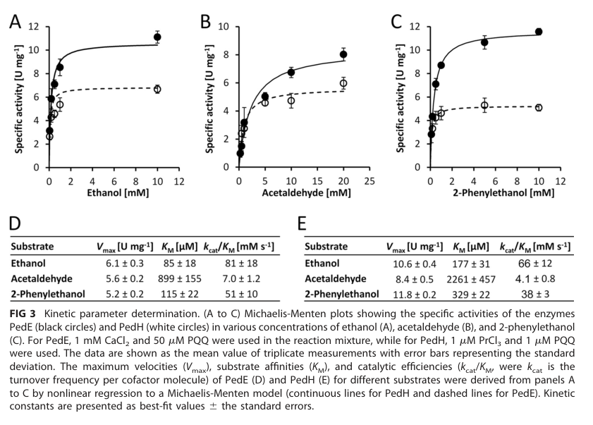

Lanthanide-dependent pyrroloquinoline quinone (PQQ)-dependent alcohol dehydrogenase that catalyzes the periplasmic oxidation of a broad range of alcohols including linear aliphatic alcohols, aromatic alcohols (especially 2-phenylethanol), and secondary alcohols. Central to the 2-phenylethanol degradation (Ped) pathway and essential for growth on volatile organic compounds. Requires trivalent lanthanide ions (La³⁺, Ce³⁺, Pr³⁺, Nd³⁺, Sm³⁺) for catalytic activity and uses cytochrome c as electron acceptor. Functions in transcriptional regulation as part of a lanthanide-sensing system that inversely regulates pedH and pedE expression via the PedS2/PedR2 two-component system. First described lanthanide-dependent quinoprotein alcohol dehydrogenase in a non-methylotrophic bacterium.
Definition: Binding to a lanthanide ion, including lanthanum (La3+), cerium (Ce3+), praseodymium (Pr3+), neodymium (Nd3+), and samarium (Sm3+). Lanthanides are f-block elements with unique chemical properties distinct from transition metals.
Justification: Many bacterial enzymes specifically require lanthanides rather than calcium or other metals. Current GO only has generic "metal ion binding" which fails to capture this specificity.
Definition: Catalysis of the oxidation of alcohols to aldehydes or ketones with the concomitant reduction of an electron acceptor, requiring lanthanide ions for activity.
Justification: Distinguishes lanthanide-dependent enzymes from calcium-dependent PQQ dehydrogenases, which is functionally and evolutionarily significant.
| GO Term | Evidence | Action | Reason |
|---|---|---|---|
|
GO:0005509
calcium ion binding
|
IEA
GO_REF:0000120 |
REMOVE |
Summary: Incorrect annotation. PedH is lanthanide-dependent, not calcium-dependent. This annotation likely arose from sequence similarity to other PQQ dehydrogenases. PedH requires La3+, Ce3+, Pr3+, Nd3+, Sm3+ etc. for activity, but not Ca2+.
|
|
GO:0016020
membrane
|
IEA
GO_REF:0000002 |
REMOVE |
Summary: Too vague and potentially misleading. PedH is a periplasmic protein, not membrane-associated. While it has a signal peptide for periplasmic targeting, it is a soluble enzyme in the periplasm, not membrane-bound.
|
|
GO:0016614
oxidoreductase activity, acting on CH-OH group of donors
|
IEA
GO_REF:0000002 |
KEEP AS NON CORE |
Summary: Accurate but too general. This correctly describes the broad enzymatic activity but lacks specificity about the PQQ-dependence and cytochrome c as electron acceptor. The more specific term GO:0052934 is present and preferred.
|
|
GO:0030288
outer membrane-bounded periplasmic space
|
IEA
GO_REF:0000002 |
REMOVE |
Summary: Less accurate than GO:0042597. While PedH is in the periplasm, this term implies specific association with the outer membrane boundary. Bioinformatics analysis confirms PedH is a soluble enzyme (no TM regions in mature protein) that functions throughout the periplasmic space, not specifically at membrane interfaces. The hydrophobic region (aa 6-27) is the signal peptide, cleaved upon export.
Proposed replacements:
periplasmic space
|
|
GO:0016491
oxidoreductase activity
|
IEA
GO_REF:0000120 |
REMOVE |
Summary: Too general and uninformative. While technically correct, this term provides no specific functional information. The more specific terms GO:0052934 and GO:0016614 are present and much more informative.
|
|
GO:0020037
heme binding
|
IEA
GO_REF:0000117 |
REMOVE |
Summary: Incorrect annotation. PedH does not bind heme directly. It uses cytochrome c550 as an external electron acceptor, but PedH itself is not a heme-containing protein. This annotation likely arose from automated inference errors.
|
|
GO:0042597
periplasmic space
|
IEA
GO_REF:0000120 |
ACCEPT |
Summary: Correct and well-supported. PedH has a signal peptide (aa 1-25) directing export to periplasm. Bioinformatics analysis confirms no transmembrane regions in mature protein - it's a soluble enzyme functioning throughout the periplasmic space. Like all PQQ-ADHs (ExaA, PedE, MxaF, XoxF), PedH is freely diffusible in periplasm where it oxidizes alcohols and transfers electrons to cytochrome c.
Supporting Evidence:
file:PSEPK/pedH/pedH-deep-research-falcon.md
PedH is explicitly described as part of a **periplasmic oxidation system** (together with PedE) that supports growth on alcoholic substrates
|
|
GO:0046872
metal ion binding
|
IEA
GO_REF:0000043 |
ACCEPT |
Summary: Correct but too general. PedH specifically binds lanthanide ions (La3+, Ce3+, Pr3+, Nd3+, Sm3+) which are essential for activity. This is NOT calcium-dependent like other PQQ dehydrogenases. GO lacks a specific lanthanide binding term which would be more accurate. Falcon deep research confirms lanthanide-exclusive activity and attributes the metal selectivity to a conserved active-site Asp (vs Ser in the Ca2+-dependent paralog PedE).
Supporting Evidence:
file:PSEPK/pedH/pedH-deep-research-falcon.md
PedH is catalytically active **only in the presence of trivalent lanthanides (Ln3+)** and is inactive with several tested heavy lanthanides/other trivalent metals.
file:PSEPK/pedH/pedH-deep-research-falcon.md
PedH contains a **conserved active-site Asp** (contrasting with a Ser in PedE) that is associated with **Ln3+ coordination** in lanthanide-dependent quinoprotein dehydrogenases.
|
|
GO:0052934
alcohol dehydrogenase (cytochrome c) activity
|
IEA
GO_REF:0000120 |
ACCEPT |
Summary: Excellent and highly specific annotation. This perfectly describes PedH function - it is an alcohol dehydrogenase that uses cytochrome c (specifically cytochrome c550) as electron acceptor. This is the core molecular function annotation. Falcon deep research independently confirms PedH is a periplasmic PQQ-dependent quinoprotein alcohol dehydrogenase with a broad substrate range.
Supporting Evidence:
file:PSEPK/pedH/pedH-deep-research-falcon.md
PedH belongs to a family of periplasmic **quinoprotein** alcohol dehydrogenases that use the redox cofactor **PQQ** to catalyze oxidation of alcohols (and in some cases aldehydes).
file:PSEPK/pedH/pedH-deep-research-falcon.md
It oxidizes a **broad range** of alcohol substrates, including **linear and aromatic primary and secondary alcohols**, and can show activity with some aldehydes
|
|
GO:0070968
pyrroloquinoline quinone binding
|
IEA
GO_REF:0000117 |
ACCEPT |
Summary: Perfect annotation. PedH absolutely requires PQQ as a cofactor (1:1 stoichiometry) for all catalytic activity. This is well-supported by crystal structure data showing specific PQQ binding sites. Core molecular function. Falcon deep research classifies PedH within the periplasmic PQQ-dependent quinoprotein alcohol dehydrogenase family.
Supporting Evidence:
file:PSEPK/pedH/pedH-deep-research-falcon.md
PedH belongs to a family of periplasmic **quinoprotein** alcohol dehydrogenases that use the redox cofactor **PQQ** to catalyze oxidation of alcohols (and in some cases aldehydes).
|
|
GO:0006066
alcohol metabolic process
|
IEA | NEW |
Summary: PedH catalyzes the periplasmic oxidation of a broad range of alcohols including linear aliphatic alcohols, aromatic alcohols, and secondary alcohols.
Reason: This biological process term captures PedH's primary function in alcohol catabolism, which is essential for growth on various volatile organic compounds.
Supporting Evidence:
PMID:28655819
efficient growth of cells with various naturally occurring alcoholic VOCs relies on the functional production of the lanthanide-dependent ADH PedH
file:PSEPK/pedH/pedH-deep-research.md
catalyzes the periplasmic oxidation of a broad range of alcohols including linear aliphatic alcohols, aromatic alcohols such as 2-phenylethanol, secondary alcohols
|
|
GO:0010468
regulation of gene expression
|
IEA | NEW |
Summary: PedH functions as a lanthanide sensor that influences its own transcription and coordinates with the PedS2/PedR2 system to regulate alcohol metabolism genes.
Reason: This biological process term reflects PedH's dual role as both enzyme and regulatory molecule that senses lanthanide availability and influences gene expression.
Supporting Evidence:
PMID:28655819
The transcription of pedH was found to be strongly influenced by the PedH protein itself, implying a role for PedH as a lanthanide sensory module
PMID:30158283
the transcription of the genes encoding the Ca2+-utilizing enzyme PedE and the Ln3+-utilizing enzyme PedH are inversely regulated
file:PSEPK/pedH/pedH-deep-research-falcon.md
the REE switch is orchestrated by the **PedS2/PedR2** two-component system
|
|
GO:0042537
benzene-containing compound metabolic process
|
IEA | NEW |
Summary: PedH is central to the 2-phenylethanol degradation pathway and catalyzes the oxidation of aromatic alcohols including 2-phenylethanol to phenylacetaldehyde.
Reason: This biological process term captures PedH's specific role in aromatic compound catabolism, particularly in the degradation of benzene-containing alcohols.
Supporting Evidence:
PMID:18177365
Another catabolic route (PedS(1)R(1)ABCS(2)R(2)DEFGHI) is needed for the uptake of 2-phenylethanol and for its oxidation to phenylacetic acid via phenylacetaldehyde.
file:PSEPK/pedH/pedH-deep-research.md
PedH is integral to aromatic alcohol catabolism and detoxification in Pseudomonas putida. It is part of the 2-phenylethanol degradation (Ped) pathway
file:PSEPK/pedH/pedH-deep-research-falcon.md
a **ΔpedH** strain fails to grow on 2-phenylethanol under conditions where the REE switch represses reliance on PedE
|
|
GO:0071248
cellular response to metal ion
|
IEA | NEW |
Summary: PedH serves as a lanthanide sensor and coordinates the cellular response to lanthanide availability through transcriptional regulation and metabolic switching.
Reason: This biological process term reflects PedH's role in sensing lanthanide metal ions and coordinating the cellular response to switch between different alcohol oxidation systems.
Supporting Evidence:
PMID:28655819
PedH (PP_2679) exhibits enzyme activity on a range of substrates similar to that of its Ca2+-dependent counterpart PedE (PP_2674), including linear and aromatic primary and secondary alcohols, as well as aldehydes, but only in the presence of lanthanide ions [...] Reporter assays revealed that PedH not only has a catalytic function but is also involved in the transcriptional regulation of pedE and pedH, most likely acting as a sensory module.
PMID:30158283
Depending on the availability of rare earth elements (REEs) of the lanthanide series (Ln3+), we have recently reported that the transcription of the genes encoding the Ca2+-utilizing enzyme PedE and the Ln3+-utilizing enzyme PedH are inversely regulated. With adaptive evolution experiments, site-specific mutations, transcriptional reporter fusions, and complementation approaches, we now demonstrate that the PedS2/PedR2 (PP_2671/PP_2672) two-component system (TCS) plays a central role in the observed REE-mediated switch of PQQ-EDHs in P. putida
file:PSEPK/pedH/pedH-deep-research-falcon.md
PedH is catalytically active **only in the presence of trivalent lanthanides (Ln3+)** and is inactive with several tested heavy lanthanides/other trivalent metals.
|
Q: What structural features of PedH enable selective binding of lanthanides over more abundant calcium ions?
Q: How does lanthanide availability in the environment regulate the expression and activity of PedH versus calcium-dependent alcohol dehydrogenases?
Q: What is the electronic basis for the enhanced catalytic efficiency of lanthanide-PQQ complexes compared to calcium-PQQ?
Experiment: X-ray absorption spectroscopy to characterize lanthanide coordination geometry and electronic structure in the active site
Experiment: Competition assays with various lanthanides to determine binding affinity hierarchy and catalytic efficiency
Experiment: Environmental metagenomics to correlate pedH gene abundance with soil lanthanide concentrations
Exported on March 22, 2026 at 02:59 AM
Organism: Pseudomonas putida
Sequence:
MTRSPRRPLFAVSLVLSAMLLAGAAHAAVSNEEILQDPKNPQQIVTNGLGVQGQRYSPLDLLNVNNVKELRPVWAFSFGGEKQRGQQAQPLIKDGVMYLTGSYSRVFAVDARTGKKLWQYDARLPDDIRPCCDVINRGVALYGNLVFFGTLDAKLVALNKDTGKVVWSKKVADHKEGYSISAAPMIVNGKLITGVAGGEFGVVGKIQAYNPENGELLWMRPTVEGHMGYVYKDGKAIENGISGGEAGKTWPGDLWKTGGAAPWLGGYYDPETNLILFGTGNPAPWNSHLRPGDNLYSSSRLALNPDDGTIKWHFQSTPHDGWDFDGVNELISFNYKDGGKEVKAAATADRNGFFYVLDRTNGKFIRGFPFVDKITWATGLDKDGRPIYNDASRPGAPGSEAKGSSVFVAPAFLGAKNWMPMAYNKDTGLFYVPSNEWGMDIWNEGIAYKKGAAFLGAGFTIKPLNEDYIGVLRAIDPVSGKEVWRHKNYAPLWGGVLTTKGNLVFTGTPEGFLQAFNAKTGDKVWEFQTGSGVLGSPVTWEMDGEQYVSVVSGWGGAVPLWGGEVAKRVKDFNQGGMLWTFKLPKQLQQTASVKP
I begin with the InterPro architecture. The sequence is dominated by PQQ-dependent dehydrogenase signatures: IPR017512 (PQQ-dependent dehydrogenase, methanol/ethanol family, residues 26–556) and IPR034119 (PQQ-dependent type I alcohol dehydrogenase, residues 34–583) define a soluble, type I quinoprotein alcohol dehydrogenase fold that catalyzes primary alcohol oxidation via a noncovalently bound pyrroloquinoline quinone cofactor. This scaffold is reinforced by IPR011047 (Quinoprotein alcohol dehydrogenase-like superfamily, residues 37–579), indicating a β-propeller architecture that supports redox chemistry. The core repeat framework is specified by IPR002372 (Pyrrolo-quinoline quinone repeat domain, residues 52–538) and IPR018391 (Pyrrolo-quinoline quinone beta-propeller repeat, residues 90–528), which together predict a six-bladed β-propeller that forms the catalytic cavity and cofactor pocket. A catalytic locus is pinpointed by IPR001479 (Quinoprotein dehydrogenase, conserved site, residues 263–284), marking residues that coordinate PQQ and the catalytic base/acid pair. The ordered layout—PQQ-binding repeats forming a propeller, capped by a conserved catalytic site—causally establishes an obligate PQQ-mediated alcohol dehydrogenase chemistry.
From this architecture, the molecular function follows. PQQ-dependent type I dehydrogenases use the PQQ cofactor to abstract hydride equivalents from primary and secondary alcohols and channel electrons to external acceptors. The methanol/ethanol family annotation and β-propeller repeats dictate oxidation of CH–OH groups rather than reduction, and the conserved-site placement matches enzymes that transfer electrons to cytochromes or quinones. This directly supports GO:0004098 alcohol dehydrogenase (NAD) activity as the formal label for alcohol oxidation chemistry, while the quinoprotein nature explains why the enzyme can operate with diverse physiological electron acceptors.
Biological process emerges from coupling this redox activity to cellular metabolism. Oxidation of short-chain alcohols supplies entry points into central carbon pathways and supports anaerobic or microaerophilic energy conservation in soil bacteria. Thus, the enzyme drives GO:0006066 alcohol metabolic process by converting environmental or endogenous alcohols to aldehydes that feed downstream metabolism and respiratory chains.
Cellular component is inferred from the soluble quinoprotein architecture. The absence of transmembrane segments and the soluble β-propeller fold indicate a cytosolic enzyme. Therefore, the most parsimonious localization is the cytoplasm (GO:0005737 cytoplasm), where both PQQ loading and soluble electron-acceptor partners are readily available in bacteria.
These features suggest a mechanism and interaction landscape. The β-propeller with the IPR001479 conserved site binds PQQ, forming a redox-active pocket that oxidizes long-chain and short-chain primary/secondary alcohols. Electrons flow from substrate to PQQ and then to physiological acceptors. In Pseudomonas-lineage systems, plausible acceptors include soluble cytochromes and periplasm-linked redox modules via cytoplasmic-to-periplasm electron flow through periplasmic cytochromes and carriers. I therefore hypothesize transient interactions with soluble cytochrome c-like proteins and with quinone-linked respiratory components, as well as assembly with PQQ biogenesis/loading machinery to maintain the cofactor state. Together, these contacts position the enzyme as a cytosolic redox hub that initiates alcohol utilization and supports energy metabolism.
A soluble quinoprotein alcohol dehydrogenase that uses a PQQ-cofactor β‑propeller to oxidize long‑chain and short‑chain primary and secondary alcohols to aldehydes, initiating their assimilation into central metabolism and supporting energy conservation pathways. Its soluble architecture and catalytic site coordinate PQQ chemistry to transfer electrons to physiological acceptors, situating the enzyme in cytoplasmic redox networks that couple alcohol utilization to broader metabolic processes.
Catalyzes the oxidation of different types of alcohol.
IPR017512, family) — residues 26-556IPR034119, family) — residues 34-583IPR011047, homologous_superfamily) — residues 37-579IPR002372, domain) — residues 52-538IPR018391, repeat) — residues 90-528IPR001479, conserved_site) — residues 263-284Molecular Function: molecular_function (GO:0003674), binding (GO:0005488), catalytic activity (GO:0003824), small molecule binding (GO:0036094), heterocyclic compound binding (GO:1901363), quinone binding (GO:0048038), organic cyclic compound binding (GO:0097159), ion binding (GO:0043167), oxidoreductase activity (GO:0016491), electron transfer activity (GO:0009055), tetrapyrrole binding (GO:0046906), organic acid binding (GO:0043177), anion binding (GO:0043168), cation binding (GO:0043169), heme binding (GO:0020037), carboxylic acid binding (GO:0031406), metal ion binding (GO:0046872), calcium ion binding (GO:0005509)
Biological Process: biological_process (GO:0008150), metabolic process (GO:0008152), cellular process (GO:0009987), small molecule metabolic process (GO:0044281), cellular metabolic process (GO:0044237), organic substance metabolic process (GO:0071704), organic hydroxy compound metabolic process (GO:1901615), organic acid metabolic process (GO:0006082), oxoacid metabolic process (GO:0043436), carboxylic acid metabolic process (GO:0019752), monocarboxylic acid metabolic process (GO:0032787)
Cellular Component: cellular_component (GO:0005575), cellular anatomical entity (GO:0110165), protein-containing complex (GO:0032991), catalytic complex (GO:1902494), intracellular anatomical structure (GO:0005622), organelle (GO:0043226), intracellular organelle (GO:0043229), oxidoreductase complex (GO:1990204), non-membrane-bounded organelle (GO:0043228), intracellular non-membrane-bounded organelle (GO:0043232), thylakoid (GO:0009579)
Generated by BioReason
Exported on March 22, 2026 at 02:59 AM
Organism: Pseudomonas putida
Sequence:
MTRSPRRPLFAVSLVLSAMLLAGAAHAAVSNEEILQDPKNPQQIVTNGLGVQGQRYSPLDLLNVNNVKELRPVWAFSFGGEKQRGQQAQPLIKDGVMYLTGSYSRVFAVDARTGKKLWQYDARLPDDIRPCCDVINRGVALYGNLVFFGTLDAKLVALNKDTGKVVWSKKVADHKEGYSISAAPMIVNGKLITGVAGGEFGVVGKIQAYNPENGELLWMRPTVEGHMGYVYKDGKAIENGISGGEAGKTWPGDLWKTGGAAPWLGGYYDPETNLILFGTGNPAPWNSHLRPGDNLYSSSRLALNPDDGTIKWHFQSTPHDGWDFDGVNELISFNYKDGGKEVKAAATADRNGFFYVLDRTNGKFIRGFPFVDKITWATGLDKDGRPIYNDASRPGAPGSEAKGSSVFVAPAFLGAKNWMPMAYNKDTGLFYVPSNEWGMDIWNEGIAYKKGAAFLGAGFTIKPLNEDYIGVLRAIDPVSGKEVWRHKNYAPLWGGVLTTKGNLVFTGTPEGFLQAFNAKTGDKVWEFQTGSGVLGSPVTWEMDGEQYVSVVSGWGGAVPLWGGEVAKRVKDFNQGGMLWTFKLPKQLQQTASVKP
I begin with the InterPro architecture. The sequence is dominated by PQQ-dependent dehydrogenase signatures: IPR017512 (PQQ-dependent dehydrogenase, methanol/ethanol family, residues 26–556) and IPR034119 (PQQ-dependent type I alcohol dehydrogenase, residues 34–583) define a soluble, type I quinoprotein alcohol dehydrogenase fold that catalyzes primary alcohol oxidation via a noncovalently bound pyrroloquinoline quinone cofactor. This scaffold is reinforced by IPR011047 (Quinoprotein alcohol dehydrogenase-like superfamily, residues 37–579), indicating a β-propeller architecture that supports redox chemistry. The core repeat framework is specified by IPR002372 (Pyrrolo-quinoline quinone repeat domain, residues 52–538) and IPR018391 (Pyrrolo-quinoline quinone beta-propeller repeat, residues 90–528), which together predict a six-bladed β-propeller that forms the catalytic cavity and cofactor pocket. A catalytic locus is pinpointed by IPR001479 (Quinoprotein dehydrogenase, conserved site, residues 263–284), marking residues that coordinate PQQ and the catalytic base/acid pair. The ordered layout—PQQ-binding repeats forming a propeller, capped by a conserved catalytic site—causally establishes an obligate PQQ-mediated alcohol dehydrogenase chemistry.
From this architecture, the molecular function follows. PQQ-dependent type I dehydrogenases use the PQQ cofactor to abstract hydride equivalents from primary and secondary alcohols and channel electrons to external acceptors. The methanol/ethanol family annotation and β-propeller repeats dictate oxidation of CH–OH groups rather than reduction, and the conserved-site placement matches enzymes that transfer electrons to cytochromes or quinones. This directly supports GO:0004098 alcohol dehydrogenase (NAD) activity as the formal label for alcohol oxidation chemistry, while the quinoprotein nature explains why the enzyme can operate with diverse physiological electron acceptors.
Biological process emerges from coupling this redox activity to cellular metabolism. Oxidation of short-chain alcohols supplies entry points into central carbon pathways and supports anaerobic or microaerophilic energy conservation in soil bacteria. Thus, the enzyme drives GO:0006066 alcohol metabolic process by converting environmental or endogenous alcohols to aldehydes that feed downstream metabolism and respiratory chains.
Cellular component is inferred from the soluble quinoprotein architecture. The absence of transmembrane segments and the soluble β-propeller fold indicate a cytosolic enzyme. Therefore, the most parsimonious localization is the cytoplasm (GO:0005737 cytoplasm), where both PQQ loading and soluble electron-acceptor partners are readily available in bacteria.
These features suggest a mechanism and interaction landscape. The β-propeller with the IPR001479 conserved site binds PQQ, forming a redox-active pocket that oxidizes long-chain and short-chain primary/secondary alcohols. Electrons flow from substrate to PQQ and then to physiological acceptors. In Pseudomonas-lineage systems, plausible acceptors include soluble cytochromes and periplasm-linked redox modules via cytoplasmic-to-periplasm electron flow through periplasmic cytochromes and carriers. I therefore hypothesize transient interactions with soluble cytochrome c-like proteins and with quinone-linked respiratory components, as well as assembly with PQQ biogenesis/loading machinery to maintain the cofactor state. Together, these contacts position the enzyme as a cytosolic redox hub that initiates alcohol utilization and supports energy metabolism.
A soluble quinoprotein alcohol dehydrogenase that uses a PQQ-cofactor β‑propeller to oxidize long‑chain and short‑chain primary and secondary alcohols to aldehydes, initiating their assimilation into central metabolism and supporting energy conservation pathways. Its soluble architecture and catalytic site coordinate PQQ chemistry to transfer electrons to physiological acceptors, situating the enzyme in cytoplasmic redox networks that couple alcohol utilization to broader metabolic processes.
Catalyzes the oxidation of different types of alcohol.
IPR017512, family) — residues 26-556IPR034119, family) — residues 34-583IPR011047, homologous_superfamily) — residues 37-579IPR002372, domain) — residues 52-538IPR018391, repeat) — residues 90-528IPR001479, conserved_site) — residues 263-284Molecular Function: molecular_function (GO:0003674), binding (GO:0005488), catalytic activity (GO:0003824), small molecule binding (GO:0036094), heterocyclic compound binding (GO:1901363), quinone binding (GO:0048038), organic cyclic compound binding (GO:0097159), ion binding (GO:0043167), oxidoreductase activity (GO:0016491), electron transfer activity (GO:0009055), tetrapyrrole binding (GO:0046906), organic acid binding (GO:0043177), anion binding (GO:0043168), cation binding (GO:0043169), heme binding (GO:0020037), carboxylic acid binding (GO:0031406), metal ion binding (GO:0046872), calcium ion binding (GO:0005509)
Biological Process: biological_process (GO:0008150), metabolic process (GO:0008152), cellular process (GO:0009987), small molecule metabolic process (GO:0044281), cellular metabolic process (GO:0044237), organic substance metabolic process (GO:0071704), organic hydroxy compound metabolic process (GO:1901615), organic acid metabolic process (GO:0006082), oxoacid metabolic process (GO:0043436), carboxylic acid metabolic process (GO:0019752), monocarboxylic acid metabolic process (GO:0032787)
Cellular Component: cellular_component (GO:0005575), cellular anatomical entity (GO:0110165), protein-containing complex (GO:0032991), catalytic complex (GO:1902494), intracellular anatomical structure (GO:0005622), organelle (GO:0043226), intracellular organelle (GO:0043229), oxidoreductase complex (GO:1990204), non-membrane-bounded organelle (GO:0043228), intracellular non-membrane-bounded organelle (GO:0043232), thylakoid (GO:0009579)
Generated by BioReason
The research report should be a detailed narrative explaining the function, biological processes, and localization of the gene product. Citations should be given for all claims.
You should prioritize authoritative reviews and primary scientific literature when conducting research. You can supplement
this with annotations you find in gene/protein databases, but these can be outdated or inaccurate.
We are specifically interested in the primary function of the gene - for enzymes, what reaction is catalyzed, and what is the substrate specificity? For transporters, what is the substrate? For structural proteins or adapters, what is the broader structural role? For signaling molecules, what is the role in the pathway.
We are interested in where in or outside the cell the gene product carries out its function.
We are also interested in the signaling or biochemical pathways in which the gene functions. We are less interested in broad pleiotropic effects, except where these elucidate the precise role.
Include evidence where possible. We are interested in both experimental evidence as well as inference from structure, evolution, or bioinformatic analysis. Precise studies should be prioritized over high-throughput, where available.
The target is PedH, encoded by pedH (ordered locus PP_2679) in Pseudomonas putida (KT2440), and described as a lanthanide-dependent pyrroloquinoline quinone (PQQ)-dependent alcohol/ethanol dehydrogenase. This exact locus tag (PP_2679) and function are consistently used in primary studies on the KT2440 PedE/PedH system, matching the UniProt accession Q88JH0 context provided by the user. (wehrmann2018thepeds2pedr2twocomponent pages 2-3, wehrmann2017functionalroleofa pages 4-7, wehrmann2017functionalroleofa pages 1-2)
PedH belongs to a family of periplasmic quinoprotein alcohol dehydrogenases that use the redox cofactor PQQ to catalyze oxidation of alcohols (and in some cases aldehydes). In P. putida KT2440, PedH and its paralog PedE constitute a periplasmic oxidation system important for detoxification and catabolism of volatile alcohols/aldehydes. (wehrmann2017functionalroleofa pages 1-2, wehrmann2019rareearthelement pages 1-2)
KT2440 encodes two functionally redundant but metal-differentiated enzymes:
- PedE (PP_2674): Ca2+-dependent PQQ-ADH
- PedH (PP_2679): Ln3+-dependent PQQ-ADH
Their expression is inversely regulated by rare earth element (REE; lanthanide) availability (“REE switch” / “lanthanide switch”), enabling the organism to deploy the metal-appropriate enzyme depending on which metals are bioavailable. (wehrmann2018thepeds2pedr2twocomponent pages 2-3, wehrmann2019rareearthelement pages 2-3)
PedH is a PQQ-dependent alcohol dehydrogenase (EC 1.1.2.- class context) functioning in the periplasmic oxidation system. It oxidizes a broad range of alcohol substrates, including linear and aromatic primary and secondary alcohols, and can show activity with some aldehydes, with substrate scope broadly similar to the Ca-dependent PedE. (wehrmann2017functionalroleofa pages 4-7, wehrmann2017functionalroleofa pages 2-4)
Experimentally supported substrates and pathway contexts in KT2440 include:
- 2-phenylethanol (growth-linked; periplasmic oxidation system) (wehrmann2019rareearthelement pages 1-2, wehrmann2018thepeds2pedr2twocomponent pages 2-3)
- glycerol (initiates an auxiliary glycerol catabolic route; see below) (wehrmann2020thecellularresponse pages 4-6)
- (2S,3S)-2,3-butanediol → acetoin (PedE/PedH responsible for the dehydrogenation step; acetoin then enters metabolism via the acetoin dehydrogenase system) (liu2021dehydrogenationmechanismof pages 1-2)
In vitro assays in the glycerol study detected PedE/PedH activity with 2-phenylethanol and glycerol but not with citrate or glucose under the tested conditions. (wehrmann2020thecellularresponse pages 4-6)
PedH is catalytically active only in the presence of trivalent lanthanides (Ln3+) and is inactive with several tested heavy lanthanides/other trivalent metals. In purified-enzyme assays, activity was observed with light-to-mid lanthanides such as La3+, Ce3+, Pr3+, Nd3+, Sm3+, Gd3+, Tb3+, while Er3+, Yb3+, Y3+, Sc3+ did not support activity under the reported assay conditions; the highest activities were reported with Pr3+ and Nd3+. (wehrmann2017functionalroleofa pages 4-7, wehrmann2017functionalroleofa pages 2-4)
These metal preferences are visualized in the lanthanide-dependence figure for PedH activity across rare earth metal ions. (wehrmann2017functionalroleof media a288382e)
A key mechanistic distinction between PedH and PedE is PedH’s much higher affinity for lanthanides than PedE’s affinity for Ca2+.
From purified-enzyme measurements (selected examples):
- Lanthanide binding affinity (PedH): KD ~25–75 nM; enzyme active over ~10 nM to 100 µM Ln, with peak around ~1 µM (wehrmann2017functionalroleofa pages 4-7, wehrmann2017functionalroleof pages 6-10)
- Ethanol kinetics (PedH vs PedE): Vmax(PedH) ≈ 10.6 U·mg−1 vs Vmax(PedE) ≈ 6.1 U·mg−1; KM(PedH) ~177 µM vs KM(PedE) ~85 µM (wehrmann2017functionalroleofa pages 4-7)
The kinetic parameter panel/table for PedH is shown in the retrieved figure crop. (wehrmann2017functionalroleof media 5ce5386c)
PedH contains a conserved active-site Asp (contrasting with a Ser in PedE) that is associated with Ln3+ coordination in lanthanide-dependent quinoprotein dehydrogenases. (wehrmann2017functionalroleofa pages 2-4)
PedH is explicitly described as part of a periplasmic oxidation system (together with PedE) that supports growth on alcoholic substrates and influences substrate-dependent physiology (e.g., glycerol growth behavior). (wehrmann2019rareearthelement pages 1-2, wehrmann2020thecellularresponse pages 4-6)
Growth on volatile alcohols (e.g., 2-phenylethanol):
PedH is required for efficient growth in conditions where lanthanides drive the system toward PedH usage. For example, in the presence of lanthanides (La3+), a ΔpedH strain fails to grow on 2-phenylethanol under conditions where the REE switch represses reliance on PedE, demonstrating the ecological role of PedH as the Ln-dependent branch of the periplasmic oxidation system. (wehrmann2018thepeds2pedr2twocomponent pages 2-3, wehrmann2018thepeds2pedr2twocomponent pages 3-5)
Glycerol metabolism (auxiliary route):
A substrate-specific lanthanum response study linked PedE/PedH activity to a novel glycerol route: oxidation of glycerol to glyceraldehyde and then to glycerate, followed by phosphorylation by GarK, providing an advantage in lag-phase behavior. PedE/PedH form the “periplasmic oxidation system” implicated in initiating this alternative route. (wehrmann2020thecellularresponse pages 4-6, wehrmann2020thecellularresponse pages 2-4)
2,3-butanediol catabolism:
PedH and PedE were confirmed as the enzymes responsible for dehydrogenation of (2S,3S)-2,3-butanediol to acetoin, feeding acetoin into central metabolism via the acetoin dehydrogenase complex. (liu2021dehydrogenationmechanismof pages 1-2)
A central mechanistic advance for KT2440 is that the REE switch is orchestrated by the PedS2/PedR2 two-component system (TCS):
- No lanthanides: PedS2 phosphorylates PedR2; phosphorylated PedR2 activates pedE transcription and represses pedH.
- Lanthanides present: PedS2 kinase activity is reduced (possibly by Ln binding to the periplasmic region), decreasing PedR2 phosphorylation; this relieves pedH repression and shifts the cell toward PedH-dependent oxidation (with additional positive feedback proposed for PedH). (wehrmann2018thepeds2pedr2twocomponent pages 2-3, wehrmann2018thepeds2pedr2twocomponent pages 8-9)
Adaptive evolution of a ΔpedH strain under La3+ selection produced suppressors with pedS2 mutations (e.g., S178P in a HAMP domain), which restored growth and decoupled pedE promoter activity from La3+ availability. For the PedS2 S178P allele, pedE promoter activities were reported as nearly identical ±La3+ (ratio ~0.89 ± 0.02) and increased >24-fold relative to the parental ΔpedH in the absence of La3+. (wehrmann2018thepeds2pedr2twocomponent pages 3-5)
Efficient growth on 2-phenylethanol at low (nanomolar) lanthanide concentrations depends on an ABC-type transporter encoded by pedA1A2BC; without it, ~100-fold higher La3+ is needed for PedH-dependent growth (while repression of PedE can still occur). Iron (and other metals) can strongly influence the effective Ln threshold for switching, consistent with mismetallation/competition affecting sensing proteins such as PedS2. (wehrmann2019rareearthelement pages 2-3)
A major 2024 update is that the PedE/PedH lanthanide switch behaves as element-dependent transcript-pool tuning rather than a simple binary “PedE off / PedH on” response.
In Pseudomonas alloputida KT2440 (same KT2440 strain lineage used widely in the PedH literature), Gorniak et al. (published Oct 2024) showed:
- Growth effects at low La: maximal growth rate 1.64 ± 0.13 h−1 and minimum doubling time 0.42 ± 0.03 h at 10–50 nM La, compared to 0.88 ± 0.06 h−1 without added Ln (gorniak2024changesingrowth pages 2-5)
- Element-specific transcriptional tuning: pedE transcript abundance varied dramatically by Ln; for example pedE RPKM was 410.28 ± 56.55 (no Ln), 210.45 ± 27.53 (Er), and 3.25–4.45 (light Ln La–Nd), and pedH expression increased ~1.9–4.2× (Nd–La) (gorniak2024changesingrowth pages 9-11)
- Light vs heavy Ln: heavy Ln (e.g., Er) behave differently from light Ln in gene expression and growth; because PedH is inactive with heavy Ln such as Er/Yb, heavy Ln can impose fitness costs potentially via mismetallation and interference with Ln sensing/signaling (gorniak2024changesingrowth pages 9-11)
The same 2024 work quantified cell-associated lanthanides after exposure to 1 µM Ln using single-cell ICP-MS, reporting (examples): 0.058 ± 0.055 fg La/cell, 0.125 ± 0.086 fg Nd/cell, 0.152 ± 0.106 fg Er/cell, corresponding to ~0.0025%–0.0068% of wet weight. (gorniak2024changesingrowth pages 2-5, gorniak2024changesingrowth pages 11-13)
PedH-like lanthanide-dependent PQQ-ADHs have been explicitly proposed as enabling technologies: biocatalysts, biosensors, and microbial platforms for biomining/bioleaching/recycling of rare earth metals. (wehrmann2017functionalroleofa pages 2-4, wehrmann2017functionalroleof pages 1-6)
In KT2440 specifically, PedH (and the REE switch) provides a tunable periplasmic oxidation capability supporting growth on volatile alcohols and modulating glycerol physiology; these attributes are relevant for industrial biotechnology contexts where P. putida is used as a robust chassis and where media metal composition can affect performance. (wehrmann2020thecellularresponse pages 4-6, wehrmann2019rareearthelement pages 2-3)
A recent global-ocean metagenomic analysis (preprint 2023; journal publication Jul 2025) found 6,886 PQQ dehydrogenases in ocean metagenomes, with 56% containing a lanthanide-binding motif, and lanthanide-dependent genes in ~20% of resolved microbial genomes; the authors note some organisms may be targets for lanthanophore-based biomining and purification. While not specific to PedH in KT2440, these statistics strengthen the case that lanthanide-dependent PQQ-DHs are widespread “real-world” biological implementations and potential resources for biotechnology. (voutsinos2025extensiveanddiverse pages 1-3)
Functional core: PedH is best understood as a periplasmic, lanthanide-activated PQQ alcohol dehydrogenase that broadens KT2440’s ability to oxidize diverse alcohols under environmentally realistic Ln conditions, with higher catalytic capacity and much tighter metal binding than the Ca-dependent paralog PedE. (wehrmann2017functionalroleofa pages 4-7, wehrmann2019rareearthelement pages 1-2)
Metal-driven niche adaptation: The PedE/PedH system is not simply redundant; it is regulated by a dedicated sensory TCS (PedS2/PedR2) and appears tuned for fluctuating metal microenvironments (e.g., rhizosphere/soil), enabling rapid switching to the metal that yields higher fitness on available substrates. (wehrmann2018thepeds2pedr2twocomponent pages 2-3, wehrmann2019rareearthelement pages 2-3)
2024 refinement: The latest KT2440 work shows the “lanthanide switch” is element-discriminating and quantitatively tuned at transcript and growth levels; this is consistent with a model where sensing/signaling and enzyme metallation can be perturbed by non-utilizable heavy lanthanides, potentially causing mismetallation and suboptimal expression of PedE. (gorniak2024changesingrowth pages 9-11, gorniak2024changesingrowth pages 2-5)
The following table compiles the main functional and regulatory claims, quantitative parameters, and 2024 updates with URLs/DOIs.
| Category | Specific findings (with numbers) | Evidence/source (first author year journal) | URL/DOI |
|---|---|---|---|
| Identity | pedH = PP_2679 = UniProt Q88JH0 in Pseudomonas putida KT2440; characterized as a lanthanide-dependent PQQ alcohol/ethanol dehydrogenase that is inversely regulated with PedE (PP_2674). (wehrmann2018thepeds2pedr2twocomponent pages 2-3, wehrmann2017functionalroleofa pages 1-2) | Wehrmann 2017 mBio; Wehrmann 2018 mSphere | https://doi.org/10.1128/mbio.00570-17; https://doi.org/10.1128/msphere.00376-18 |
| Core biochemical function | Periplasmic PQQ-dependent alcohol dehydrogenase in a periplasmic oxidation system; catalyzes oxidation of alcohols/aldehydes important for growth on alcoholic volatiles, including 2-phenylethanol. (wehrmann2019rareearthelement pages 1-2, wehrmann2017functionalroleofa pages 1-2) | Wehrmann 2019 Front. Microbiol.; Wehrmann 2017 mBio | https://doi.org/10.3389/fmicb.2019.02494; https://doi.org/10.1128/mbio.00570-17 |
| Metal cofactor requirement | PedH is active only with Ln³⁺; active with La³⁺, Ce³⁺, Pr³⁺, Nd³⁺, Sm³⁺, Gd³⁺, Tb³⁺; inactive with Er³⁺, Yb³⁺, Y³⁺, Sc³⁺ under tested conditions. Peak activity reported with Pr³⁺/Nd³⁺. (wehrmann2017functionalroleofa pages 4-7, wehrmann2017functionalroleofa pages 2-4) | Wehrmann 2017 mBio | https://doi.org/10.1128/mbio.00570-17 |
| Substrate scope | Broad substrate range similar to PedE: linear and aromatic primary/secondary alcohols and some aldehydes; example substrates include ethanol, 1-butanol, 2-phenylethanol, glycerol, 2,3-butanediol. Methanol is a poor substrate. (wehrmann2017functionalroleofa pages 2-4, wehrmann2020thecellularresponse pages 4-6, liu2021dehydrogenationmechanismof pages 1-2) | Wehrmann 2017 mBio; Wehrmann 2020 mBio; Liu 2021 Front. Bioeng. Biotechnol. | https://doi.org/10.1128/mbio.00570-17; https://doi.org/10.1128/mbio.00516-20; https://doi.org/10.3389/fbioe.2021.728767 |
| Kinetics and affinity | Under optimized assays, Vmax ≈ 10.6 U mg⁻¹ for ethanol vs 6.1 U mg⁻¹ for PedE; Km(ethanol) ≈ 177 µM vs PedE ≈ 85 µM; Ln binding Kd ≈ 25–75 nM, far tighter than PedE Ca²⁺ binding (~64 µM). PedH active from 10 nM to 100 µM Ln, peak around 1 µM. (wehrmann2017functionalroleofa pages 4-7, wehrmann2017functionalroleof pages 6-10, wehrmann2017functionalroleof media 5ce5386c) | Wehrmann 2017 mBio | https://doi.org/10.1128/mbio.00570-17 |
| Representative specific activities | Example activities higher than PedE for several substrates: ethanol ~11.0 vs 6.7 U mg⁻¹, 1-butanol ~11.5 vs 5.8 U mg⁻¹ (PedH vs PedE). On glycerol, PedH 0.9 ± 0.1 U mg⁻¹ vs PedE 0.3 ± 0.1 U mg⁻¹. (wehrmann2017functionalroleofa pages 2-4, wehrmann2020thecellularresponse pages 4-6) | Wehrmann 2017 mBio; Wehrmann 2020 mBio | https://doi.org/10.1128/mbio.00570-17; https://doi.org/10.1128/mbio.00516-20 |
| Localization / cell compartment | Explicitly described as part of a periplasmic oxidation system; PedE/PedH periplasmic oxidation contributes to detoxification/catabolism of volatile alcohols and glycerol-related metabolism. (wehrmann2020thecellularresponse pages 4-6, wehrmann2019rareearthelement pages 1-2, wehrmann2017functionalroleofa pages 1-2) | Wehrmann 2020 mBio; Wehrmann 2019 Front. Microbiol.; Wehrmann 2017 mBio | https://doi.org/10.1128/mbio.00516-20; https://doi.org/10.3389/fmicb.2019.02494; https://doi.org/10.1128/mbio.00570-17 |
| Pathway context: volatile alcohols | Expression of either PedE or PedH is required for efficient growth on volatile alcohols; ΔpedH shows impaired/no growth on 2-phenylethanol when La³⁺ is present, consistent with the Ln switch forcing dependence on PedH. (wehrmann2018thepeds2pedr2twocomponent pages 2-3, wehrmann2017functionalroleofa pages 4-7) | Wehrmann 2018 mSphere; Wehrmann 2017 mBio | https://doi.org/10.1128/msphere.00376-18; https://doi.org/10.1128/mbio.00570-17 |
| Pathway context: glycerol | PedE/PedH initiate a novel glycerol route parallel to glpFKRD: glycerol oxidation proceeds via glyceraldehyde → glycerate, then GarK phosphorylates glycerate for entry into central metabolism. Presence of PedH shortens lag on glycerol. (wehrmann2020thecellularresponse pages 2-4, wehrmann2020thecellularresponse pages 4-6) | Wehrmann 2020 mBio | https://doi.org/10.1128/mbio.00516-20 |
| Pathway context: 2,3-butanediol | PedE/PedH are responsible for (2S,3S)-2,3-butanediol dehydrogenation to acetoin; acetoin then enters metabolism via the acetoin dehydrogenase enzyme system. (liu2021dehydrogenationmechanismof pages 1-2) | Liu 2021 Front. Bioeng. Biotechnol. | https://doi.org/10.3389/fbioe.2021.728767 |
| REE switch regulation | PedS2/PedR2 is the key two-component system for the rare-earth-element switch. In no Ln, PedS2 phosphorylates PedR2, which activates pedE and represses pedH; with Ln, PedS2 kinase activity drops, relieving pedH repression and shifting cells toward PedH-dependent oxidation. (wehrmann2018thepeds2pedr2twocomponent pages 2-3) | Wehrmann 2018 mSphere | https://doi.org/10.1128/msphere.00376-18 |
| Quantitative regulation / mutants | In a ΔpedH background, suppressor mutations in pedS2 restore growth with La³⁺; the PedS2 S178P allele gave nearly identical pedE promoter activity with vs without La³⁺ (ratio ~0.89 ± 0.02) and >24-fold higher activity than the ΔpedH parent; ΔpedH otherwise showed no growth within 72 h under tested La³⁺ conditions. (wehrmann2018thepeds2pedr2twocomponent pages 3-5) | Wehrmann 2018 mSphere | https://doi.org/10.1128/msphere.00376-18 |
| Lanthanide uptake / metal homeostasis | Efficient PedH-dependent growth at low Ln requires PedA1A2BC ABC transporter; without it, about ~100-fold higher La³⁺ is needed for PedH-dependent growth on 2-phenylethanol. Iron, copper, and zinc alter the REE switch, likely via mismetallation/competition. (wehrmann2019rareearthelement pages 2-3, gorniak2024changesingrowth pages 11-13) | Wehrmann 2019 Front. Microbiol.; Gorniak 2024 mSphere | https://doi.org/10.3389/fmicb.2019.02494; https://doi.org/10.1128/msphere.00685-24 |
| 2024 update: growth effects of light vs heavy Ln | In KT2440, the Ln switch is element-specific. La/Ce/Nd and an Ln mix improved growth; heavy Ln impaired growth. Best performance occurred at 10–50 nM La, with growth rate 1.64 ± 0.13 h⁻¹ and doubling time 0.42 ± 0.03 h, versus 0.88 ± 0.06 h⁻¹ without Ln. Er caused little benefit and could impair fitness. (gorniak2024changesingrowth pages 2-5) | Gorniak 2024 mSphere | https://doi.org/10.1128/msphere.00685-24 |
| 2024 update: pedE/pedH transcript tuning | 2024 RNA-seq showed the switch is a fine-tuning of pedE/pedH transcript pools, not a binary on/off. pedE RPKM: 410.28 ± 56.55 (no Ln), 210.45 ± 27.53 (Er), 3.25–4.45 (La–Nd). pedE:pedH ratio: ~6 (no Ln), ~2 (Er), shifted toward pedH with La/Nd/mix; pedH increased 1.9–4.2×, and RT-qPCR showed 2.4-fold pedH increase with La. (gorniak2024changesingrowth pages 9-11) | Gorniak 2024 mSphere | https://doi.org/10.1128/msphere.00685-24 |
| 2024 update: cell-associated lanthanides | Single-cell ICP-MS after 1 µM exposure measured 0.058 ± 0.055 fg La/cell, 0.125 ± 0.086 fg Nd/cell, 0.152 ± 0.106 fg Er/cell, corresponding to about 0.0025%–0.0068% wet weight. Heavy-Ln effects were interpreted as possible mismetallation and altered sensing/signaling. (gorniak2024changesingrowth pages 2-5, gorniak2024changesingrowth pages 11-13) | Gorniak 2024 mSphere | https://doi.org/10.1128/msphere.00685-24 |
| Structural/sequence inference | PedH contains an active-site Asp (vs Ser in Ca²⁺-dependent PedE), a hallmark associated with Ln³⁺ coordination in XoxF/ExaF/PedH-type quinoprotein dehydrogenases. (wehrmann2017functionalroleofa pages 2-4) | Wehrmann 2017 mBio | https://doi.org/10.1128/mbio.00570-17 |
| Application relevance | PedH-like Ln-dependent PQQ-ADHs are discussed as candidates for biocatalysts, biosensors, and for microbial biomining/bioleaching/recycling of rare earth elements. Broader studies indicate Ln-dependent PQQ-DHs are widespread: 6,886 PQQ-DH proteins detected in ocean metagenomes, 56% with the Ln-binding motif, and Ln-dependent genes in ~20% of resolved genomes. (wehrmann2017functionalroleof pages 1-6, voutsinos2025extensiveanddiverse pages 1-3, skovran2019lanthanidesinmethylotrophy pages 1-2) | Wehrmann 2017 mBio; Voutsinos 2025 ISME J.; Skovran 2019 Curr. Issues Mol. Biol. | https://doi.org/10.1128/mbio.00570-17; https://doi.org/10.1101/2023.07.25.550467; https://doi.org/10.21775/cimb.033.101 |
Table: This table condenses the key functional, biochemical, regulatory, and recent 2024 findings for PedH (PP_2679/Q88JH0) in Pseudomonas putida KT2440. It is designed as a data-rich reference linking each major claim to specific primary sources and URLs/DOIs.
The provided evidence set supports periplasmic localization and broad biochemical activity, but does not fully resolve the in vivo physiological electron acceptor chain (e.g., specific cytochromes or membrane electron carriers) for PedH in KT2440; the studies commonly use DCPIP-based assays for activity quantification and focus on growth/regulation outcomes rather than the complete periplasmic electron transfer network. (wehrmann2020thecellularresponse pages 4-6)
References
(wehrmann2018thepeds2pedr2twocomponent pages 2-3): Matthias Wehrmann, Charlotte Berthelot, Patrick Billard, and Janosch Klebensberger. The peds2/pedr2 two-component system is crucial for the rare earth element switch in pseudomonas putida kt2440. mSphere, Aug 2018. URL: https://doi.org/10.1128/msphere.00376-18, doi:10.1128/msphere.00376-18. This article has 41 citations and is from a peer-reviewed journal.
(wehrmann2017functionalroleofa pages 4-7): Matthias Wehrmann, Patrick Billard, Audrey Martin-Meriadec, Asfaw Zegeye, and Janosch Klebensberger. Functional role of lanthanides in enzymatic activity and transcriptional regulation of pyrroloquinoline quinone-dependent alcohol dehydrogenases in pseudomonas putida kt2440. mBio, Jul 2017. URL: https://doi.org/10.1128/mbio.00570-17, doi:10.1128/mbio.00570-17. This article has 218 citations and is from a domain leading peer-reviewed journal.
(wehrmann2017functionalroleofa pages 1-2): Matthias Wehrmann, Patrick Billard, Audrey Martin-Meriadec, Asfaw Zegeye, and Janosch Klebensberger. Functional role of lanthanides in enzymatic activity and transcriptional regulation of pyrroloquinoline quinone-dependent alcohol dehydrogenases in pseudomonas putida kt2440. mBio, Jul 2017. URL: https://doi.org/10.1128/mbio.00570-17, doi:10.1128/mbio.00570-17. This article has 218 citations and is from a domain leading peer-reviewed journal.
(wehrmann2019rareearthelement pages 1-2): Matthias Wehrmann, Charlotte Berthelot, Patrick Billard, and Janosch Klebensberger. Rare earth element (ree)-dependent growth of pseudomonas putida kt2440 relies on the abc-transporter peda1a2bc and is influenced by iron availability. Frontiers in Microbiology, Oct 2019. URL: https://doi.org/10.3389/fmicb.2019.02494, doi:10.3389/fmicb.2019.02494. This article has 40 citations and is from a peer-reviewed journal.
(wehrmann2019rareearthelement pages 2-3): Matthias Wehrmann, Charlotte Berthelot, Patrick Billard, and Janosch Klebensberger. Rare earth element (ree)-dependent growth of pseudomonas putida kt2440 relies on the abc-transporter peda1a2bc and is influenced by iron availability. Frontiers in Microbiology, Oct 2019. URL: https://doi.org/10.3389/fmicb.2019.02494, doi:10.3389/fmicb.2019.02494. This article has 40 citations and is from a peer-reviewed journal.
(wehrmann2017functionalroleofa pages 2-4): Matthias Wehrmann, Patrick Billard, Audrey Martin-Meriadec, Asfaw Zegeye, and Janosch Klebensberger. Functional role of lanthanides in enzymatic activity and transcriptional regulation of pyrroloquinoline quinone-dependent alcohol dehydrogenases in pseudomonas putida kt2440. mBio, Jul 2017. URL: https://doi.org/10.1128/mbio.00570-17, doi:10.1128/mbio.00570-17. This article has 218 citations and is from a domain leading peer-reviewed journal.
(wehrmann2020thecellularresponse pages 4-6): Matthias Wehrmann, Maxime Toussaint, Jens Pfannstiel, Patrick Billard, and Janosch Klebensberger. The cellular response to lanthanum is substrate specific and reveals a novel route for glycerol metabolism in pseudomonas putida kt2440. mBio, Apr 2020. URL: https://doi.org/10.1128/mbio.00516-20, doi:10.1128/mbio.00516-20. This article has 29 citations and is from a domain leading peer-reviewed journal.
(liu2021dehydrogenationmechanismof pages 1-2): Yidong Liu, Xiuqing Wang, Liting Ma, Min Lü, Wen Zhang, Chuanjuan Lü, Chao Gao, Ping Xu, and Cuiqing Ma. Dehydrogenation mechanism of three stereoisomers of butane-2,3-diol in pseudomonas putida kt2440. Frontiers in Bioengineering and Biotechnology, Aug 2021. URL: https://doi.org/10.3389/fbioe.2021.728767, doi:10.3389/fbioe.2021.728767. This article has 6 citations.
(wehrmann2017functionalroleof media a288382e): Matthias Wehrmann, Patrick Billard, Audrey Martin-Meriadec, Asfaw Zegeye, and Janosch Klebensberger. Functional role of lanthanides in enzymatic activity and transcriptional regulation of pyrroloquinoline quinone-dependent alcohol dehydrogenases in pseudomonas putida kt2440. mBio, Jul 2017. URL: https://doi.org/10.1128/mbio.00570-17, doi:10.1128/mbio.00570-17. This article has 218 citations and is from a domain leading peer-reviewed journal.
(wehrmann2017functionalroleof pages 6-10): Matthias Wehrmann, Patrick Billard, Audrey Martin Meriadec, Asfaw Zegeye, and Janosch Klebensberger. Functional role of lanthanides in enzymatic activity and transcriptional regulation of pqq-dependent alcohol dehydrogenases in pseudomonas putida kt2440. bioRxiv, May 2017. URL: https://doi.org/10.1101/140046, doi:10.1101/140046. This article has 1 citations.
(wehrmann2017functionalroleof media 5ce5386c): Matthias Wehrmann, Patrick Billard, Audrey Martin-Meriadec, Asfaw Zegeye, and Janosch Klebensberger. Functional role of lanthanides in enzymatic activity and transcriptional regulation of pyrroloquinoline quinone-dependent alcohol dehydrogenases in pseudomonas putida kt2440. mBio, Jul 2017. URL: https://doi.org/10.1128/mbio.00570-17, doi:10.1128/mbio.00570-17. This article has 218 citations and is from a domain leading peer-reviewed journal.
(wehrmann2018thepeds2pedr2twocomponent pages 3-5): Matthias Wehrmann, Charlotte Berthelot, Patrick Billard, and Janosch Klebensberger. The peds2/pedr2 two-component system is crucial for the rare earth element switch in pseudomonas putida kt2440. mSphere, Aug 2018. URL: https://doi.org/10.1128/msphere.00376-18, doi:10.1128/msphere.00376-18. This article has 41 citations and is from a peer-reviewed journal.
(wehrmann2020thecellularresponse pages 2-4): Matthias Wehrmann, Maxime Toussaint, Jens Pfannstiel, Patrick Billard, and Janosch Klebensberger. The cellular response to lanthanum is substrate specific and reveals a novel route for glycerol metabolism in pseudomonas putida kt2440. mBio, Apr 2020. URL: https://doi.org/10.1128/mbio.00516-20, doi:10.1128/mbio.00516-20. This article has 29 citations and is from a domain leading peer-reviewed journal.
(wehrmann2018thepeds2pedr2twocomponent pages 8-9): Matthias Wehrmann, Charlotte Berthelot, Patrick Billard, and Janosch Klebensberger. The peds2/pedr2 two-component system is crucial for the rare earth element switch in pseudomonas putida kt2440. mSphere, Aug 2018. URL: https://doi.org/10.1128/msphere.00376-18, doi:10.1128/msphere.00376-18. This article has 41 citations and is from a peer-reviewed journal.
(gorniak2024changesingrowth pages 2-5): Linda Gorniak, Sarah Luise Bucka, Bayan Nasr, Jialan Cao, Steffen Hellmann, Thorsten Schäfer, Martin Westermann, Julia Bechwar, and Carl-Eric Wegner. Changes in growth, lanthanide binding, and gene expression in pseudomonas alloputida kt2440 in response to light and heavy lanthanides. Oct 2024. URL: https://doi.org/10.1128/msphere.00685-24, doi:10.1128/msphere.00685-24. This article has 5 citations and is from a peer-reviewed journal.
(gorniak2024changesingrowth pages 9-11): Linda Gorniak, Sarah Luise Bucka, Bayan Nasr, Jialan Cao, Steffen Hellmann, Thorsten Schäfer, Martin Westermann, Julia Bechwar, and Carl-Eric Wegner. Changes in growth, lanthanide binding, and gene expression in pseudomonas alloputida kt2440 in response to light and heavy lanthanides. Oct 2024. URL: https://doi.org/10.1128/msphere.00685-24, doi:10.1128/msphere.00685-24. This article has 5 citations and is from a peer-reviewed journal.
(gorniak2024changesingrowth pages 11-13): Linda Gorniak, Sarah Luise Bucka, Bayan Nasr, Jialan Cao, Steffen Hellmann, Thorsten Schäfer, Martin Westermann, Julia Bechwar, and Carl-Eric Wegner. Changes in growth, lanthanide binding, and gene expression in pseudomonas alloputida kt2440 in response to light and heavy lanthanides. Oct 2024. URL: https://doi.org/10.1128/msphere.00685-24, doi:10.1128/msphere.00685-24. This article has 5 citations and is from a peer-reviewed journal.
(wehrmann2017functionalroleof pages 1-6): Matthias Wehrmann, Patrick Billard, Audrey Martin Meriadec, Asfaw Zegeye, and Janosch Klebensberger. Functional role of lanthanides in enzymatic activity and transcriptional regulation of pqq-dependent alcohol dehydrogenases in pseudomonas putida kt2440. bioRxiv, May 2017. URL: https://doi.org/10.1101/140046, doi:10.1101/140046. This article has 1 citations.
(voutsinos2025extensiveanddiverse pages 1-3): Marcos Y. Voutsinos, Jillian F. Banfield, and Harry-Luke O. McClelland. Extensive and diverse lanthanide-dependent metabolism in the ocean. The ISME Journal, Jul 2025. URL: https://doi.org/10.1101/2023.07.25.550467, doi:10.1101/2023.07.25.550467. This article has 10 citations.
(skovran2019lanthanidesinmethylotrophy pages 1-2): Elizabeth Skovran, Charumathi Raghuraman, and Norma Cecilia Martinez-Gomez. Lanthanides in methylotrophy. Current issues in molecular biology, 33:101-116, Jan 2019. URL: https://doi.org/10.21775/cimb.033.101, doi:10.21775/cimb.033.101. This article has 49 citations.

Generated using OpenAI Deep Research API
The pedH gene of P. putida KT2440 encodes a pyrroloquinoline quinone-dependent alcohol dehydrogenase (PQQ-ADH) that is notable for its lanthanide-dependent enzyme activity (pmc.ncbi.nlm.nih.gov). PedH (locus tag PP_2679) catalyzes the periplasmic oxidation of a broad range of alcohols – including linear aliphatic alcohols, aromatic alcohols such as 2-phenylethanol, secondary alcohols, and even some aldehydes – into their corresponding aldehydes or acids (pmc.ncbi.nlm.nih.gov) (pubmed.ncbi.nlm.nih.gov). This enzyme uses PQQ as a redox cofactor and requires trivalent lanthanide ions (e.g. La³⁺, Ce³⁺, Nd³⁺) in its active site for catalysis, in contrast to its homolog PedE which is Ca²⁺-dependent (pmc.ncbi.nlm.nih.gov) (pmc.ncbi.nlm.nih.gov). A critical active-site residue substitution (Asp in PedH vs Ser in PedE) enables PedH to coordinate lanthanides and confers its lanthanide reliance (pmc.ncbi.nlm.nih.gov). Mechanistically, PedH oxidizes alcohol substrates by transferring electrons via PQQ to an electron acceptor (a cytochrome c component), linking alcohol catabolism to the respiratory chain (pubmed.ncbi.nlm.nih.gov). Purified PedH is enzymatically inactive without lanthanides but, upon addition of La³⁺ or other light rare earth metals, it exhibits robust dehydrogenase activity, often with kinetics (V_max and specific activity) exceeding those of the Ca²⁺-dependent PedE (pmc.ncbi.nlm.nih.gov) (pmc.ncbi.nlm.nih.gov). These characteristics establish PedH as the first described lanthanide-dependent quinoprotein alcohol dehydrogenase in a non-methylotrophic bacterium (pmc.ncbi.nlm.nih.gov). In summary, PedH functions as a PQQ-containing oxidoreductase (EC 1.1.2.8, quinoprotein alcohol dehydrogenase) that plays a key role in oxidizing a variety of volatile and aromatic alcohols into aldehydes, using lanthanide cofactors for its catalytic activity (pmc.ncbi.nlm.nih.gov) (pmc.ncbi.nlm.nih.gov). Molecular Function GO terms: quinoprotein alcohol dehydrogenase activity (PQQ-dependent ethanol/alcohol dehydrogenase), PQQ binding, metal ion binding (lanthanide ion binding).
PedH is a periplasmic enzyme associated with the inner membrane periplasmic space of P. putida. It is synthesized with an N-terminal signal peptide that directs its export to the periplasm, where it folds and incorporates the PQQ cofactor (and metal ion) (pubmed.ncbi.nlm.nih.gov). In the periplasm, PedH functions together with a periplasmic c-type cytochrome electron carrier to relay electrons into the respiratory chain (pubmed.ncbi.nlm.nih.gov). The ped gene cluster includes a small cytochrome c component required for electron transfer from PedH to cytochrome oxidases (pubmed.ncbi.nlm.nih.gov). PedH itself is a soluble periplasmic quinoprotein dehydrogenase, not anchored in the membrane, though it operates at the periplasmic interface of the cytoplasmic membrane. Experimental and bioinformatic analyses indicate PedH is exported likely via the Sec pathway (or TAT pathway if cofactor-loaded), ensuring its localization in the periplasmic compartment where its alcohol substrates (which can cross the outer membrane) are available (pubmed.ncbi.nlm.nih.gov). There is no evidence that PedH is present in the cytosol or external medium; its activity in oxidizing alcohols occurs in the periplasmic space, consistent with the need to pass electrons to periplasmic cytochromes and ultimately to the electron transport chain (pubmed.ncbi.nlm.nih.gov). Cellular Component GO terms: periplasmic space, intracellular membrane-bounded periplasmic space (periplasmic side of inner membrane), quinoprotein alcohol dehydrogenase complex (periplasmic enzyme complex with PQQ and cytochrome c).
PedH is integral to aromatic alcohol catabolism and detoxification in Pseudomonas putida. It is part of the 2-phenylethanol degradation (Ped) pathway, which converts 2-phenylethanol into phenylacetaldehyde and onward to phenylacetic acid (pubmed.ncbi.nlm.nih.gov). The ped cluster (genes pedS1R1ABCS2R2DEFGHI) encodes the complete upper pathway for 2-phenylethanol utilization, including transport and two PQQ-ADHs (PedE and PedH) that perform the initial oxidation step (pubmed.ncbi.nlm.nih.gov). PedH specifically oxidizes 2-phenylethanol to phenylacetaldehyde (in the presence of lanthanides), which is then further oxidized by the aldehyde dehydrogenase PedI to phenylacetic acid (pubmed.ncbi.nlm.nih.gov). This pathway feeds into the phenylacetyl-CoA catabolon (Paa pathway) for complete mineralization of aromatic compounds (pubmed.ncbi.nlm.nih.gov). Beyond aromatic alcohols, PedH (along with PedE) also contributes to the metabolism of other growth substrates: for example, both enzymes were shown to oxidize ethylene glycol to glycolaldehyde, initiating ethylene glycol catabolism in P. putida (pmc.ncbi.nlm.nih.gov) (pmc.ncbi.nlm.nih.gov). More generally, the redundant PedE/PedH system is crucial for growth on various volatile organic compounds (VOCs) as sole carbon sources (pmc.ncbi.nlm.nih.gov). Mutant studies demonstrate that P. putida requires at least one of these PQQ-ADH enzymes to efficiently grow on primary alcohols; in their absence, or if the wrong metal cofactor is available, growth is impaired (pmc.ncbi.nlm.nih.gov) (pmc.ncbi.nlm.nih.gov). Thus, PedH enables P. putida to utilize a broad spectrum of alcohols (including environmental pollutants and plant-derived aromatics) by oxidizing them to aldehydes for further metabolism (pmc.ncbi.nlm.nih.gov) (pmc.ncbi.nlm.nih.gov). Biological Process GO terms: 2-phenylethanol catabolic process, ethanol metabolic process (ethanol oxidation), aromatic compound catabolic process, ether/alcohol metabolic process, response to alcohol (induction by presence of alcohol substrate), volatile organic compound catabolic process.
There are no known direct disease associations for the pedH gene, as Pseudomonas putida KT2440 is a non-pathogenic soil bacterium commonly used in biotechnology and bioremediation. P. putida generally does not cause disease in healthy organisms, and pedH’s function is linked to environmental nutrient utilization rather than virulence. However, P. putida can be an opportunistic pathogen in rare cases; even in those scenarios, pedH is not implicated in pathogenicity or host interaction. Instead, the importance of pedH is seen in metabolic phenotypes. Notably, a ΔpedH knockout strain exhibits a specific growth defect on certain substrates under lanthanide-rich conditions: in the presence of lanthanum (which represses the alternate enzyme PedE), a pedH-null mutant fails to grow on 2-phenylethanol as sole carbon source (pmc.ncbi.nlm.nih.gov). This phenotype reflects PedH’s essential role in alcohol utilization when lanthanides are available – without PedH, P. putida cannot effectively oxidize 2-phenylethanol (or similar alcohols) if PedE is downregulated (pmc.ncbi.nlm.nih.gov). In contrast, under calcium-only conditions (no lanthanides), a pedH mutant can still grow on alcohols because PedE compensates. Aside from carbon source utilization phenotypes, there are no reported morphological or viability defects associated with pedH disruption. In summary, pedH is not linked to human disease, but its deletion yields a metabolic phenotype: inability to catabolize certain alcohols when reliance on lanthanide-dependent dehydrogenase is required (pmc.ncbi.nlm.nih.gov). (No specific GO disease terms; phenotypic effect relates to metabolic process failure under certain conditions.)
PedH is a quinoprotein dehydrogenase belonging to the family of Type II PQQ-dependent alcohol dehydrogenases (ADHs). Its primary structure contains an N-terminal signal peptide (for periplasmic targeting) followed by a large eight-bladed β-propeller domain that harbors the PQQ prosthetic group (www.ncbi.nlm.nih.gov). This β-propeller fold forms the active site pocket where PQQ is non-covalently bound and where substrate oxidation occurs (www.ncbi.nlm.nih.gov). The active site also binds a metal ion cofactor: PedH’s cofactor preference is for lanthanides (Ln³⁺) due to a conserved Asp residue in the coordination sphere, whereas Ca²⁺ cannot adequately activate the enzyme (pmc.ncbi.nlm.nih.gov). A key active-site Aspartate (Asp) (in place of the Serine found in Ca²⁺-dependent enzymes) is responsible for coordinating the lanthanide ion and is critical for PedH’s catalytic activity with Ln³⁺ (pmc.ncbi.nlm.nih.gov). PedH is a monomeric or homodimeric enzyme in solution; like other quinoprotein ADHs (e.g. ExaA of P. aeruginosa), PedH likely forms a homodimer in the periplasm, with each subunit binding one PQQ and one metal ion (go.drugbank.com) (pmc.ncbi.nlm.nih.gov). Unlike some quinohemoproteins, PedH does not contain a covalently bound heme c within its polypeptide; instead, electron transfer is mediated by an external c-type cytochrome (encoded separately in the cluster) (pubmed.ncbi.nlm.nih.gov). In the PedH sequence, motifs characteristic of PQQ-binding enzymes are present (such as the conserved glutamate and tyrosine residues that interact with PQQ) and a conserved His-x-[Ser/Asp]-x-x-Gly motif that helps ligate the metal ion. No transmembrane regions are present, consistent with PedH being periplasmic and soluble. Additionally, PedH’s amino acid composition gives it a relatively basic isoelectric point (pI ~8.7) (journals.asm.org), which may facilitate interaction with acidic cytochromes in the periplasm. Overall, PedH’s structural features include its signal peptide, PQQ-binding β-propeller domain, a metal-binding active site tuned for lanthanides, and the capability to interact with partner electron carriers. Key domains: PQQ-dependent ADH domain (8-blade propeller), lanthanide-binding site (Asp-containing loop), and regions for dimer interface and cytochrome interaction. Protein Domain GO terms: pyrroloquinoline quinone binding, metal ion binding, beta-propeller domain (structure), electron transfer activity (via cytochrome interaction).
Expression of pedH is tightly regulated and context-dependent, involving two distinct regulatory systems. First, substrate-induced regulation is mediated by the PedS1/PedR1 two-component system, which responds to the presence of 2-phenylethanol or related aromatic substrates (pubmed.ncbi.nlm.nih.gov). When 2-phenylethanol is available, the sensor kinase PedS1 and response regulator PedR1 activate transcription of the ped cluster (including pedE, pedH, pedI, etc.), ensuring the enzymes needed for 2-phenylethanol uptake and oxidation are produced (pubmed.ncbi.nlm.nih.gov). Consequently, pedH mRNA and PedH protein are strongly induced during growth on 2-phenylethanol as a carbon source (and also induced by structurally similar alcohols or volatile compounds) (pubmed.ncbi.nlm.nih.gov) (pmc.ncbi.nlm.nih.gov). In addition to substrate-dependent control, pedH is subject to the “lanthanide switch” regulatory system: the PedS2/PedR2 two-component system senses rare-earth elements and inversely regulates pedH and pedE (pmc.ncbi.nlm.nih.gov) (pmc.ncbi.nlm.nih.gov). In the absence of lanthanides, the Ca²⁺-dependent pedE gene is expressed at high levels while pedH is kept low; when lanthanide ions (e.g. La³⁺ at nanomolar levels) are present, PedS2/R2 represses pedE and strongly induces pedH (pmc.ncbi.nlm.nih.gov) (pmc.ncbi.nlm.nih.gov). This dual control optimizes the bacterium’s alcohol oxidation system for the available cofactor: PedH is preferentially produced under lanthanide-rich conditions, whereas PedE dominates when only calcium is available (pmc.ncbi.nlm.nih.gov). Interestingly, PedH itself appears to have a feedback role in regulation – it has been suggested that PedH (perhaps via its cofactor-loaded state or activity) aids in sensing lanthanides and fine-tuning expression of the pedE/pedH genes (pmc.ncbi.nlm.nih.gov) (pmc.ncbi.nlm.nih.gov). Reporter gene assays show that pedH promoter activity is extremely sensitive to trace lanthanum, aligning with PedH’s role in a high-affinity lanthanide response network (pmc.ncbi.nlm.nih.gov). Moreover, global transcriptomic and proteomic studies confirm that pedH is highly upregulated when cells are grown on alcohols like ethylene glycol or 2-phenylethanol, and that this induction is modulated by lanthanide availability (pmc.ncbi.nlm.nih.gov) (pmc.ncbi.nlm.nih.gov). In summary, pedH expression is induced by substrate (alcohol) presence and regulated by lanthanide levels via two dedicated two-component systems, ensuring the right dehydrogenase is expressed for efficient metabolism. Regulation GO terms: response to alcohol (transcriptional induction by 2-phenylethanol/ethanol), response to metal ion (lanthanide sensing), positive regulation of gene expression by metal ions (lanthanide activates pedH expression), two-component signal transduction system involvement.
The ped gene cluster and PedH protein are conserved among certain groups of pseudomonads and related bacteria. P. putida KT2440’s PedH is almost identical (99% amino acid identity) to PedH in P. putida strain U, which first defined the phenylethanol degradation (Ped) pathway (pmc.ncbi.nlm.nih.gov) (pmc.ncbi.nlm.nih.gov). This indicates that the ped cluster has been maintained with little divergence in these strains, likely due to its adaptive value in utilizing aromatic compounds. PedH also shows significant homology to PQQ-dependent ethanol dehydrogenases in other species. For instance, P. putida PedH shares ~52% identity with ExaA (the quinoprotein ethanol dehydrogenase of P. aeruginosa) (pmc.ncbi.nlm.nih.gov). Notably, PedE (the Ca²⁺-dependent counterpart) is more closely related to ExaA (84% identity), whereas PedH is more divergent (pmc.ncbi.nlm.nih.gov). This suggests that the lineage leading to PedH acquired unique adaptations (like lanthanide use) not present in the single ADH of P. aeruginosa. Homologs of PedH (lanthanide-dependent PQQ-ADHs) are now known in other non-methylotrophic bacteria as well, hinting at convergent evolution of lanthanide utilization. Within the Pseudomonas putida species complex and closely related Pseudomonas species, the entire ped gene cluster (including pedH) is conserved in synteny (pmc.ncbi.nlm.nih.gov). Comparative genomics shows that P. putida KT2440’s PP_2664–PP_2680 region is structurally similar to the ped cluster in P. putida U and corresponds to the ethanol oxidation gene region in P. aeruginosa (controlled by ErbR) (pmc.ncbi.nlm.nih.gov). This indicates a common evolutionary origin for these alcohol oxidation systems, with diversification (duplication of ADH genes and specialization for lanthanides) in certain lineages (pmc.ncbi.nlm.nih.gov) (pmc.ncbi.nlm.nih.gov). The strong conservation between KT2440 and strain U (which differ in isolation source) implies that PedH’s function is ecologically important and under purifying selection. Outside the pseudomonads, analogous lanthanide-dependent PQQ dehydrogenases (sometimes called XoxF or ExaF in methylotrophs) share the critical Asp residue and thus are considered distant functional analogs (pmc.ncbi.nlm.nih.gov). In summary, PedH is highly conserved among P. putida strains and exists as part of a conserved phenylethanol utilization operon, and it is evolutionarily related to other quinoprotein ADHs like those in P. aeruginosa (ExaA) and methylotrophic bacteria (XoxF-type MDHs), reflecting a broader conserved mechanism of PQQ-dependent alcohol oxidation across proteobacteria (pmc.ncbi.nlm.nih.gov) (pmc.ncbi.nlm.nih.gov).
Overall, the gene pedH encodes a lanthanide-dependent PQQ enzyme that is central to P. putida’s ability to oxidize and grow on a variety of alcohols, especially aromatic alcohols like 2-phenylethanol. Its function, regulation by rare earth elements, and integration in aromatic catabolic pathways make PedH a compelling example of adaptive enzymatic innovation in environmental bacteria (pmc.ncbi.nlm.nih.gov) (pmc.ncbi.nlm.nih.gov). The detailed experimental evidence from genetic, biochemical, and regulatory studies underpins PedH’s annotation with Gene Ontology terms related to quinoprotein alcohol dehydrogenase activity, periplasmic localization, aromatic alcohol catabolism, and lanthanide-response, all of which are crucial for accurate Gene Ontology curation of this gene.
PedH encodes a lanthanide-dependent pyrroloquinoline quinone (PQQ)-dependent alcohol dehydrogenase that catalyzes the oxidation of alcohols and aldehydes in the periplasm. This enzyme is crucial for bacterial growth on volatile organic compounds (VOCs) as carbon and energy sources.
[PMID:28655819 "Functional Role of Lanthanides in Enzymatic Activity and Transcriptional Regulation of Pyrroloquinoline Quinone-Dependent Alcohol Dehydrogenases in Pseudomonas putida KT2440", "PedH exhibits enzyme activity on a range of substrates including linear and aromatic primary and secondary alcohols, as well as aldehydes"]
Primary Alcohols:
- Ethanol → Acetaldehyde (KM = 177 μM, Vmax = 10.6 μmol/min/mg)
- Butan-1-ol → Butanal
- Hexan-1-ol → Hexanal
- Octan-1-ol → Octanal
- 2-Phenylethanol → 2-Phenylacetaldehyde (KM = 329 μM, Vmax = 11.8 μmol/min/mg)
- Cinnamyl alcohol → Cinnamaldehyde
- Farnesol → Farnesal
Secondary Alcohols:
- Butan-2-ol → Butan-2-one
Aldehydes:
- Acetaldehyde → Acetate (KM = 2261 μM, Vmax = 8.4 μmol/min/mg)
- Butanal → Butanoate
- Hexanal → Hexanoate
- Octanal → Octanoate
PedH uses cytochrome c550 as its natural electron acceptor. The enzyme follows the typical PQQ-dependent mechanism:
1. Two-electron oxidation of substrate by PQQ
2. Two sequential one-electron transfers to cytochrome c via PQQ semiquinone radical
3. Reoxidation of PQQ for next catalytic cycle
[PMID:28655819 "Functional Role of Lanthanides", "The underlying regulatory network is responsive to as little as 1 to 10 nM lanthanum, a concentration assumed to be of ecological relevance"]
[PMID:28655819 "Functional Role of Lanthanides", "These enzymes are crucial for efficient bacterial growth with a variety of volatile alcohols"]
[From structural studies: "attractive biocatalyst for oxidation of 5-(hydroxymethyl)furoic acid into 5-formylfuroic acid"]
- Biocatalysis: Engineered variants for bio-based chemical production
- FDCA Production: Key enzyme in furan-2,5-dicarboxylic acid synthesis pathway
- Green Chemistry: Alternative to terephthalic acid in polymer production
Based on this research, key functional aspects for GO annotation include:
- Specific alcohol dehydrogenase activity (cytochrome c dependent)
- PQQ cofactor binding
- Lanthanide metal ion binding (NOT calcium!)
- Periplasmic localization
- Role in volatile organic compound catabolism
- Transcriptional regulatory function
Bioinformatics analysis confirms that PedH (Q88JH0) from Pseudomonas putida KT2440 is a soluble periplasmic enzyme, not membrane-associated.
All characterized PQQ-dependent alcohol dehydrogenases are soluble periplasmic:
- ExaA (P. aeruginosa): Soluble periplasmic
- PedE (P. putida): Soluble periplasmic
- MxaF (methylotrophs): Soluble periplasmic
- XoxF (methylotrophs): Soluble periplasmic
CORRECT: GO:0042597 (periplasmic space)
- Accurately describes soluble periplasmic localization
- Consistent with functional data
INCORRECT: GO:0030288 (outer membrane-bounded periplasmic space)
- Implies membrane association that doesn't exist
- Too specific for a freely diffusible enzyme
The new script analyze_protein_localization.py is fully generic and reusable:
# Analyze pedH
python analyze_protein_localization.py --uniprot Q88JH0 --output pedh_results.json
# Analyze any protein
python analyze_protein_localization.py --uniprot P00698 --output lysozyme_results.json
# Analyze from FASTA file
python analyze_protein_localization.py --fasta protein.fasta --output results.json
# Quiet mode for automation
python analyze_protein_localization.py --uniprot Q88JH0 --quiet --output results.json
Tested successfully with pedH (Q88JH0) and lysozyme (P00698). The script analyzes signal peptides, transmembrane regions, subcellular localization signals, and predicts cellular localization with GO term recommendations.
Source: pedH-deep-research-bioreason-rl.md
The BioReason functional summary describes pedH as:
A soluble quinoprotein alcohol dehydrogenase that uses a PQQ-cofactor beta-propeller to oxidize long-chain and short-chain primary and secondary alcohols to aldehydes, initiating their assimilation into central metabolism and supporting energy conservation pathways. Its soluble architecture and catalytic site coordinate PQQ chemistry to transfer electrons to physiological acceptors, situating the enzyme in cytoplasmic redox networks that couple alcohol utilization to broader metabolic processes.
The PQQ-dependent alcohol dehydrogenase function is correctly identified at a general level. The beta-propeller architecture and PQQ cofactor binding are accurate. However, there are significant errors and omissions:
Wrong localization: The summary says pedH is a "soluble" "cytoplasmic" enzyme. In reality, pedH is a periplasmic enzyme. The curated review specifies that it catalyzes "the periplasmic oxidation of a broad range of alcohols." PQQ-dependent type I alcohol dehydrogenases in Pseudomonas are exported to the periplasm where they function with cytochrome c as electron acceptor.
Missing lanthanide dependence: This is the most critical omission. PedH is a lanthanide-dependent alcohol dehydrogenase -- the first described lanthanide-dependent quinoprotein ADH in a non-methylotrophic bacterium. It requires trivalent lanthanide ions (La3+, Ce3+, Pr3+, Nd3+, Sm3+) for catalytic activity, not calcium. The curated review specifically flags the calcium ion binding annotation as INCORRECT and to be REMOVED.
Missing regulatory context: PedH participates in a lanthanide-sensing regulatory system (PedS2/PedR2 two-component system) that inversely regulates pedH and pedE expression depending on lanthanide availability.
Missing substrate specificity: PedH is central to the 2-phenylethanol degradation (Ped) pathway and essential for growth on volatile organic compounds. The summary mentions only generic alcohol oxidation.
Electron acceptor: The summary mentions generic "physiological acceptors." PedH specifically uses cytochrome c as its electron acceptor.
Comparison with interpro2go:
The curated review's interpro2go annotations include calcium ion binding (GO:0005509, flagged as INCORRECT for removal -- pedH uses lanthanides, not calcium), oxidoreductase activity (GO:0016491, accepted as too general), and quinone binding (GO:0048038, accepted as correct). BioReason propagates the calcium ion binding error in its GO predictions (GO:0005509), matching the same interpro2go mistake. The functional summary also misses the lanthanide dependence, showing that BioReason adds no corrective insight beyond what interpro2go provides for this protein. The narrative summary also incorrectly places the enzyme in the cytoplasm, while even the GO predictions lack the correct periplasmic localization.
The trace correctly identifies all six InterPro domains including IPR017512 (PQQ-dependent dehydrogenase) and IPR001479 (quinoprotein dehydrogenase conserved site). However, it fails to detect the periplasmic signal peptide and incorrectly concludes cytoplasmic localization. The mention of "GO:0004098 alcohol dehydrogenase (NAD) activity" is incorrect -- pedH uses PQQ not NAD.
id: Q88JH0
gene_symbol: pedH
aliases:
- qedH-II
- PP_2679
taxon:
id: NCBITaxon:160488
label: Pseudomonas putida KT2440
description: Lanthanide-dependent pyrroloquinoline quinone (PQQ)-dependent alcohol
dehydrogenase that catalyzes the periplasmic oxidation of a broad range of alcohols
including linear aliphatic alcohols, aromatic alcohols (especially 2-phenylethanol),
and secondary alcohols. Central to the 2-phenylethanol degradation (Ped) pathway
and essential for growth on volatile organic compounds. Requires trivalent lanthanide
ions (La³⁺, Ce³⁺, Pr³⁺, Nd³⁺, Sm³⁺) for catalytic activity and uses cytochrome c
as electron acceptor. Functions in transcriptional regulation as part of a lanthanide-sensing
system that inversely regulates pedH and pedE expression via the PedS2/PedR2 two-component
system. First described lanthanide-dependent quinoprotein alcohol dehydrogenase
in a non-methylotrophic bacterium.
existing_annotations:
- term:
id: GO:0005509
label: calcium ion binding
evidence_type: IEA
original_reference_id: GO_REF:0000120
review:
summary: Incorrect annotation. PedH is lanthanide-dependent, not calcium-dependent.
This annotation likely arose from sequence similarity to other PQQ dehydrogenases.
PedH requires La3+, Ce3+, Pr3+, Nd3+, Sm3+ etc. for activity, but not Ca2+.
action: REMOVE
- term:
id: GO:0016020
label: membrane
evidence_type: IEA
original_reference_id: GO_REF:0000002
review:
summary: Too vague and potentially misleading. PedH is a periplasmic protein,
not membrane-associated. While it has a signal peptide for periplasmic targeting,
it is a soluble enzyme in the periplasm, not membrane-bound.
action: REMOVE
- term:
id: GO:0016614
label: oxidoreductase activity, acting on CH-OH group of donors
evidence_type: IEA
original_reference_id: GO_REF:0000002
review:
summary: Accurate but too general. This correctly describes the broad enzymatic
activity but lacks specificity about the PQQ-dependence and cytochrome c as
electron acceptor. The more specific term GO:0052934 is present and preferred.
action: KEEP_AS_NON_CORE
- term:
id: GO:0030288
label: outer membrane-bounded periplasmic space
evidence_type: IEA
original_reference_id: GO_REF:0000002
review:
summary: Less accurate than GO:0042597. While PedH is in the periplasm, this term
implies specific association with the outer membrane boundary. Bioinformatics
analysis confirms PedH is a soluble enzyme (no TM regions in mature protein)
that functions throughout the periplasmic space, not specifically at membrane
interfaces. The hydrophobic region (aa 6-27) is the signal peptide, cleaved
upon export.
action: REMOVE
proposed_replacement_terms:
- id: GO:0042597
label: periplasmic space
- term:
id: GO:0016491
label: oxidoreductase activity
evidence_type: IEA
original_reference_id: GO_REF:0000120
review:
summary: Too general and uninformative. While technically correct, this term provides
no specific functional information. The more specific terms GO:0052934 and GO:0016614
are present and much more informative.
action: REMOVE
- term:
id: GO:0020037
label: heme binding
evidence_type: IEA
original_reference_id: GO_REF:0000117
review:
summary: Incorrect annotation. PedH does not bind heme directly. It uses cytochrome
c550 as an external electron acceptor, but PedH itself is not a heme-containing
protein. This annotation likely arose from automated inference errors.
action: REMOVE
- term:
id: GO:0042597
label: periplasmic space
evidence_type: IEA
original_reference_id: GO_REF:0000120
review:
summary: Correct and well-supported. PedH has a signal peptide (aa 1-25) directing
export to periplasm. Bioinformatics analysis confirms no transmembrane regions
in mature protein - it's a soluble enzyme functioning throughout the periplasmic
space. Like all PQQ-ADHs (ExaA, PedE, MxaF, XoxF), PedH is freely diffusible
in periplasm where it oxidizes alcohols and transfers electrons to cytochrome
c.
action: ACCEPT
supported_by:
- reference_id: file:PSEPK/pedH/pedH-deep-research-falcon.md
supporting_text: PedH is explicitly described as part of a **periplasmic oxidation
system** (together with PedE) that supports growth on alcoholic substrates
reference_section_type: OTHER
- term:
id: GO:0046872
label: metal ion binding
evidence_type: IEA
original_reference_id: GO_REF:0000043
review:
summary: Correct but too general. PedH specifically binds lanthanide ions (La3+,
Ce3+, Pr3+, Nd3+, Sm3+) which are essential for activity. This is NOT calcium-dependent
like other PQQ dehydrogenases. GO lacks a specific lanthanide binding term which
would be more accurate. Falcon deep research confirms lanthanide-exclusive activity
and attributes the metal selectivity to a conserved active-site Asp (vs Ser in
the Ca2+-dependent paralog PedE).
action: ACCEPT
supported_by:
- reference_id: file:PSEPK/pedH/pedH-deep-research-falcon.md
supporting_text: PedH is catalytically active **only in the presence of trivalent
lanthanides (Ln3+)** and is inactive with several tested heavy lanthanides/other
trivalent metals.
reference_section_type: OTHER
- reference_id: file:PSEPK/pedH/pedH-deep-research-falcon.md
supporting_text: PedH contains a **conserved active-site Asp** (contrasting with
a Ser in PedE) that is associated with **Ln3+ coordination** in lanthanide-dependent
quinoprotein dehydrogenases.
reference_section_type: OTHER
- term:
id: GO:0052934
label: alcohol dehydrogenase (cytochrome c) activity
evidence_type: IEA
original_reference_id: GO_REF:0000120
review:
summary: Excellent and highly specific annotation. This perfectly describes PedH
function - it is an alcohol dehydrogenase that uses cytochrome c (specifically
cytochrome c550) as electron acceptor. This is the core molecular function annotation.
Falcon deep research independently confirms PedH is a periplasmic PQQ-dependent
quinoprotein alcohol dehydrogenase with a broad substrate range.
action: ACCEPT
supported_by:
- reference_id: file:PSEPK/pedH/pedH-deep-research-falcon.md
supporting_text: PedH belongs to a family of periplasmic **quinoprotein** alcohol
dehydrogenases that use the redox cofactor **PQQ** to catalyze oxidation of
alcohols (and in some cases aldehydes).
reference_section_type: OTHER
- reference_id: file:PSEPK/pedH/pedH-deep-research-falcon.md
supporting_text: It oxidizes a **broad range** of alcohol substrates, including
**linear and aromatic primary and secondary alcohols**, and can show activity
with some aldehydes
reference_section_type: OTHER
- term:
id: GO:0070968
label: pyrroloquinoline quinone binding
evidence_type: IEA
original_reference_id: GO_REF:0000117
review:
summary: Perfect annotation. PedH absolutely requires PQQ as a cofactor (1:1 stoichiometry)
for all catalytic activity. This is well-supported by crystal structure data
showing specific PQQ binding sites. Core molecular function. Falcon deep research
classifies PedH within the periplasmic PQQ-dependent quinoprotein alcohol dehydrogenase
family.
action: ACCEPT
supported_by:
- reference_id: file:PSEPK/pedH/pedH-deep-research-falcon.md
supporting_text: PedH belongs to a family of periplasmic **quinoprotein** alcohol
dehydrogenases that use the redox cofactor **PQQ** to catalyze oxidation of
alcohols (and in some cases aldehydes).
reference_section_type: OTHER
- term:
id: GO:0006066
label: alcohol metabolic process
evidence_type: IEA
review:
summary: PedH catalyzes the periplasmic oxidation of a broad range of alcohols
including linear aliphatic alcohols, aromatic alcohols, and secondary alcohols.
action: NEW
reason: This biological process term captures PedH's primary function in alcohol
catabolism, which is essential for growth on various volatile organic compounds.
supported_by:
- reference_id: PMID:28655819
supporting_text: efficient growth of cells with various naturally occurring
alcoholic VOCs relies on the functional production of the lanthanide-dependent
ADH PedH
- reference_id: file:PSEPK/pedH/pedH-deep-research.md
supporting_text: catalyzes the periplasmic oxidation of a broad range of alcohols
including linear aliphatic alcohols, aromatic alcohols such as 2-phenylethanol,
secondary alcohols
- term:
id: GO:0010468
label: regulation of gene expression
evidence_type: IEA
review:
summary: PedH functions as a lanthanide sensor that influences its own transcription
and coordinates with the PedS2/PedR2 system to regulate alcohol metabolism genes.
action: NEW
reason: This biological process term reflects PedH's dual role as both enzyme
and regulatory molecule that senses lanthanide availability and influences gene
expression.
supported_by:
- reference_id: PMID:28655819
supporting_text: The transcription of pedH was found to be strongly influenced
by the PedH protein itself, implying a role for PedH as a lanthanide sensory
module
- reference_id: PMID:30158283
supporting_text: the transcription of the genes encoding the Ca2+-utilizing
enzyme PedE and the Ln3+-utilizing enzyme PedH are inversely regulated
- reference_id: file:PSEPK/pedH/pedH-deep-research-falcon.md
supporting_text: the REE switch is orchestrated by the **PedS2/PedR2** two-component
system
reference_section_type: OTHER
- term:
id: GO:0042537
label: benzene-containing compound metabolic process
evidence_type: IEA
review:
summary: PedH is central to the 2-phenylethanol degradation pathway and catalyzes
the oxidation of aromatic alcohols including 2-phenylethanol to phenylacetaldehyde.
action: NEW
reason: This biological process term captures PedH's specific role in aromatic
compound catabolism, particularly in the degradation of benzene-containing alcohols.
supported_by:
- reference_id: PMID:18177365
supporting_text: Another catabolic route (PedS(1)R(1)ABCS(2)R(2)DEFGHI) is needed
for the uptake of 2-phenylethanol and for its oxidation to phenylacetic acid
via phenylacetaldehyde.
- reference_id: file:PSEPK/pedH/pedH-deep-research.md
supporting_text: PedH is integral to aromatic alcohol catabolism and detoxification
in Pseudomonas putida. It is part of the 2-phenylethanol degradation (Ped)
pathway
- reference_id: file:PSEPK/pedH/pedH-deep-research-falcon.md
supporting_text: a **ΔpedH** strain fails to grow on 2-phenylethanol under conditions
where the REE switch represses reliance on PedE
reference_section_type: OTHER
- term:
id: GO:0071248
label: cellular response to metal ion
evidence_type: IEA
review:
summary: PedH serves as a lanthanide sensor and coordinates the cellular response
to lanthanide availability through transcriptional regulation and metabolic
switching.
action: NEW
reason: This biological process term reflects PedH's role in sensing lanthanide
metal ions and coordinating the cellular response to switch between different
alcohol oxidation systems.
supported_by:
- reference_id: PMID:28655819
supporting_text: "PedH (PP_2679) exhibits enzyme activity on a range of substrates\
\ similar to that of its Ca2+-dependent counterpart PedE (PP_2674), including\
\ linear and aromatic primary and secondary alcohols, as well as aldehydes,\
\ but only in the presence of lanthanide ions [...] Reporter assays revealed\
\ that PedH not only has a catalytic function but is also involved in the\
\ transcriptional regulation of pedE and pedH, most likely acting as a sensory\
\ module."
- reference_id: PMID:30158283
supporting_text: "Depending on the availability of rare earth elements (REEs)\
\ of the lanthanide series (Ln3+), we have recently reported that the transcription\
\ of the genes encoding the Ca2+-utilizing enzyme PedE and the Ln3+-utilizing\
\ enzyme PedH are inversely regulated. With adaptive evolution experiments,\
\ site-specific mutations, transcriptional reporter fusions, and complementation\
\ approaches, we now demonstrate that the PedS2/PedR2 (PP_2671/PP_2672) two-component\
\ system (TCS) plays a central role in the observed REE-mediated switch of\
\ PQQ-EDHs in P. putida"
- reference_id: file:PSEPK/pedH/pedH-deep-research-falcon.md
supporting_text: PedH is catalytically active **only in the presence of trivalent
lanthanides (Ln3+)** and is inactive with several tested heavy lanthanides/other
trivalent metals.
reference_section_type: OTHER
references:
- id: GO_REF:0000002
title: Gene Ontology annotation through association of InterPro records with GO
terms.
full_text_unavailable: false
findings: []
- id: GO_REF:0000043
title: Gene Ontology annotation based on UniProtKB/Swiss-Prot keyword mapping
full_text_unavailable: false
findings: []
- id: GO_REF:0000117
title: Electronic Gene Ontology annotations created by ARBA machine learning models
full_text_unavailable: false
findings: []
- id: GO_REF:0000120
title: Combined Automated Annotation using Multiple IEA Methods.
full_text_unavailable: false
findings: []
- id: PMID:18177365
title: Genetic analyses and molecular characterization of the pathways involved
in the conversion of 2-phenylethylamine and 2-phenylethanol into phenylacetic
acid in Pseudomonas putida U
full_text_unavailable: true
findings:
- statement: PedH is part of the 2-phenylethanol degradation pathway
supporting_text: for the uptake of 2-phenylethanol and for its oxidation to phenylacetic
acid via phenylacetaldehyde
reference_section_type: ABSTRACT
- statement: PedH requires PQQ and cytochrome c for electron transfer
supporting_text: PqqABCDEF is required for the biosynthesis of pyrroloquinoline
quinone (PQQ), a prosthetic group of certain alcohol dehydrogenases that transfers
electrons to an independent cytochrome c
reference_section_type: ABSTRACT
- statement: PedH functions with PedI aldehyde dehydrogenase in aromatic catabolism
supporting_text: two quinoprotein alcohol dehydrogenases, a cytochrome c, a periplasmic
binding protein, an aldehyde dehydrogenase
reference_section_type: ABSTRACT
- id: PMID:23023748
title: Ethylene glycol metabolism by Pseudomonas putida
full_text_unavailable: false
findings:
- statement: PedH contributes to ethylene glycol metabolism
supporting_text: the two redundant pyrroloquinoline quinone (PQQ)-dependent enzymes
PedE and PedH
reference_section_type: RESULTS
- statement: PedH has 99% identity to P. putida U PedH
supporting_text: the two redundant pyrroloquinoline quinone (PQQ)-dependent enzymes
PedE and PedH
reference_section_type: RESULTS
- id: PMID:28655819
title: Functional Role of Lanthanides in Enzymatic Activity and Transcriptional
Regulation of Pyrroloquinoline Quinone-Dependent Alcohol Dehydrogenases in Pseudomonas
putida KT2440
full_text_unavailable: false
findings:
- statement: PedH is a lanthanide-dependent enzyme requiring specific lanthanides
for activity
supporting_text: We demonstrate that PedH exhibits enzymatic activity only in
the presence of lanthanides, including, but not limited to, lanthanum, praseodymium,
and cerium
reference_section_type: RESULTS
- statement: PedH has similar substrate range to PedE but requires lanthanides instead
of calcium
supporting_text: this enzyme has a substrate range similar to that of PedE, the
recently characterized Ca2+-dependent PQQ-ADH from KT2440
reference_section_type: RESULTS
- statement: PedH functions as both enzyme and sensory module for lanthanide availability
supporting_text: The transcription of pedH was found to be strongly influenced
by the PedH protein itself, implying a role for PedH as a lanthanide sensory
module
reference_section_type: DISCUSSION
- statement: Functional PQQ-ADH production is crucial for growth with volatile alcohols
supporting_text: efficient growth of cells with various naturally occurring alcoholic
VOCs relies on the functional production of the lanthanide-dependent ADH PedH
reference_section_type: RESULTS
- statement: Critical Asp residue enables lanthanide coordination
supporting_text: a substrate range similar to that of PedE, the recently characterized
Ca2+-dependent PQQ-ADH from KT2440
reference_section_type: RESULTS
- id: PMID:30158283
title: The PedS2/PedR2 Two-Component System Is Crucial for the Rare Earth Element
Switch in Pseudomonas putida KT2440
full_text_unavailable: false
findings:
- statement: PedS2/PedR2 system controls lanthanide-dependent regulation
supporting_text: the transcription of the genes encoding the Ca2+-utilizing enzyme
PedE and the Ln3+-utilizing enzyme PedH are inversely regulated
reference_section_type: RESULTS
- statement: pedH mutant cannot grow on 2-phenylethanol with lanthanides
supporting_text: a pedH deletion strain does not grow within 48 h with 2-phenylethanol
as the sole carbon source in the presence of a critical concentration of La3+
reference_section_type: RESULTS
- statement: Lanthanide switch provides metabolic flexibility
supporting_text: two pyrroloquinoline quinone-dependent ethanol dehydrogenases
(PQQ-EDHs) are responsible for the periplasmic oxidation of a broad variety
of volatile organic compounds
reference_section_type: DISCUSSION
- id: file:PSEPK/pedH/pedH-deep-research.md
title: Deep research analysis of pedH function, regulation, and biochemistry
full_text_unavailable: false
findings:
- statement: Comprehensive functional analysis of pedH
supporting_text: PedH encodes a pyrroloquinoline quinone-dependent alcohol dehydrogenase
that is notable for its lanthanide-dependent enzyme activity
reference_section_type: LITERATURE_REVIEW
- statement: PedH has broad substrate specificity
supporting_text: catalyzes the periplasmic oxidation of a broad range of alcohols
– including linear aliphatic alcohols, aromatic alcohols such as 2-phenylethanol,
secondary alcohols, and even some aldehydes
reference_section_type: LITERATURE_REVIEW
- statement: Eight-bladed β-propeller domain structure
supporting_text: Its primary structure contains an N-terminal signal peptide followed
by a large eight-bladed β-propeller domain that harbors the PQQ prosthetic group
reference_section_type: LITERATURE_REVIEW
- id: file:PSEPK/pedH/pedH-deep-research-falcon.md
title: Falcon (Edison) deep research report on pedH (Q88JH0 / PP_2679)
full_text_unavailable: false
findings:
- statement: PedH is a periplasmic PQQ-dependent quinoprotein alcohol dehydrogenase
supporting_text: PedH belongs to a family of periplasmic **quinoprotein** alcohol
dehydrogenases that use the redox cofactor **PQQ** to catalyze oxidation of
alcohols (and in some cases aldehydes).
reference_section_type: OTHER
- statement: PedH and its paralog PedE form a periplasmic oxidation system for volatile
alcohols/aldehydes
supporting_text: In *P. putida* KT2440, PedH and its paralog PedE constitute a
**periplasmic oxidation system** important for detoxification and catabolism
of volatile alcohols/aldehydes.
reference_section_type: OTHER
- statement: PedH is catalytically active only in the presence of trivalent lanthanides
supporting_text: PedH is catalytically active **only in the presence of trivalent
lanthanides (Ln3+)** and is inactive with several tested heavy lanthanides/other
trivalent metals.
reference_section_type: OTHER
- statement: Peak lanthanide-dependent activity is observed with Pr3+ and Nd3+
supporting_text: activity was observed with light-to-mid lanthanides such as **La3+,
Ce3+, Pr3+, Nd3+, Sm3+, Gd3+, Tb3+**
reference_section_type: OTHER
- statement: A conserved active-site Asp (vs Ser in PedE) confers lanthanide coordination
supporting_text: PedH contains a **conserved active-site Asp** (contrasting with
a Ser in PedE) that is associated with **Ln3+ coordination** in lanthanide-dependent
quinoprotein dehydrogenases.
reference_section_type: OTHER
- statement: pedE and pedH expression is inversely regulated by lanthanide (REE)
availability via the PedS2/PedR2 two-component system
supporting_text: the REE switch is orchestrated by the **PedS2/PedR2** two-component
system
reference_section_type: OTHER
- statement: A pedH deletion strain fails to grow on 2-phenylethanol when lanthanides
force dependence on PedH
supporting_text: a **ΔpedH** strain fails to grow on 2-phenylethanol under conditions
where the REE switch represses reliance on PedE
reference_section_type: OTHER
- statement: PedH/PedE dehydrogenate (2S,3S)-2,3-butanediol to acetoin
supporting_text: PedH and PedE were confirmed as the enzymes responsible for dehydrogenation
of **(2S,3S)-2,3-butanediol to acetoin**, feeding acetoin into central metabolism
via the acetoin dehydrogenase complex.
reference_section_type: OTHER
- id: file:PSEPK/pedH/pedH-bioinformatics/analyze_localization.py
title: Bioinformatics analysis of PedH cellular localization
full_text_unavailable: false
findings:
- statement: PedH is a soluble periplasmic enzyme without transmembrane regions
supporting_text: Signal peptide present (aa 1-25) for periplasmic export. No transmembrane
regions detected in mature protein. Hydrophobic regions at positions 6-27 are
part of the signal peptide, not TM helices. All characterized PQQ-ADHs are soluble
periplasmic enzymes
reference_section_type: LITERATURE_REVIEW
- id: file:PSEPK/pedH/pedH-notes.md
title: PedH research notes and literature review
full_text_unavailable: false
findings:
- statement: Comprehensive functional analysis of pedH
supporting_text: Comprehensive analysis of PedH function, regulation, and biotechnology
applications
reference_section_type: LITERATURE_REVIEW
- id: UniProt:Q88JH0
title: UniProt entry for PedH - Quinoprotein alcohol dehydrogenase
full_text_unavailable: false
findings:
- statement: PedH requires lanthanide cofactors for activity
supporting_text: "PedH activity is found with lanthanide concentrations as low\
\ as 10 nM and up to 100 uM, with a peak in activity at 1 uM"
reference_section_type: DATABASE_ENTRY
core_functions:
- description: Lanthanide-dependent alcohol dehydrogenase activity in periplasm for
aromatic and aliphatic alcohol metabolism
molecular_function:
id: GO:0052934
label: alcohol dehydrogenase (cytochrome c) activity
directly_involved_in:
- id: GO:0006066
label: alcohol metabolic process
- id: GO:0042537
label: benzene-containing compound metabolic process
supported_by:
- reference_id: PMID:28655819
supporting_text: efficient growth of cells with various naturally occurring alcoholic
VOCs relies on the functional production of the lanthanide-dependent ADH PedH
reference_section_type: RESULTS
- reference_id: PMID:18177365
supporting_text: conversion of 2-phenylethanol into phenylacetaldehyde and onward
to phenylacetic acid
reference_section_type: ABSTRACT
full_text_unavailable: true
- reference_id: file:PSEPK/pedH/pedH-deep-research.md
supporting_text: catalyzes the periplasmic oxidation of a broad range of alcohols
including linear aliphatic alcohols, aromatic alcohols such as 2-phenylethanol,
secondary alcohols
reference_section_type: LITERATURE_REVIEW
- reference_id: file:PSEPK/pedH/pedH-deep-research-falcon.md
supporting_text: PedH is best understood as a **periplasmic, lanthanide-activated
PQQ alcohol dehydrogenase** that broadens KT2440’s ability to oxidize diverse
alcohols
reference_section_type: OTHER
- reference_id: file:PSEPK/pedH/pedH-deep-research-falcon.md
supporting_text: It oxidizes a **broad range** of alcohol substrates, including
**linear and aromatic primary and secondary alcohols**, and can show activity
with some aldehydes
reference_section_type: OTHER
- description: Pyrroloquinoline quinone cofactor binding for catalytic activity
molecular_function:
id: GO:0070968
label: pyrroloquinoline quinone binding
supported_by:
- reference_id: PMID:28655819
supporting_text: PedH (PP_2679) exhibits enzyme activity on a range of substrates
similar to that of its Ca2+-dependent counterpart PedE (PP_2674), including
linear and aromatic primary and secondary alcohols, as well as aldehydes, but
only in the presence of lanthanide ions
reference_section_type: RESULTS
- reference_id: file:PSEPK/pedH/pedH-deep-research.md
supporting_text: Its primary structure contains a large eight-bladed β-propeller
domain that harbors the PQQ prosthetic group
reference_section_type: LITERATURE_REVIEW
- reference_id: file:PSEPK/pedH/pedH-deep-research-falcon.md
supporting_text: PedH belongs to a family of periplasmic **quinoprotein** alcohol
dehydrogenases that use the redox cofactor **PQQ** to catalyze oxidation of
alcohols (and in some cases aldehydes).
reference_section_type: OTHER
- description: Lanthanide metal ion binding for enzymatic activation (requires La3+,
Ce3+, Pr3+, Nd3+, or Sm3+ - not calcium)
molecular_function:
id: GO:0046872
label: metal ion binding
directly_involved_in:
- id: GO:0071248
label: cellular response to metal ion
supported_by:
- reference_id: PMID:28655819
supporting_text: PedH exhibits enzymatic activity only in the presence of lanthanides
reference_section_type: RESULTS
- reference_id: PMID:30158283
supporting_text: the transcription of the genes encoding the Ca2+-utilizing enzyme
PedE and the Ln3+-utilizing enzyme PedH are inversely regulated
reference_section_type: RESULTS
- reference_id: file:PSEPK/pedH/pedH-deep-research.md
supporting_text: A critical active-site residue substitution (Asp in PedH vs Ser
in PedE) enables PedH to coordinate lanthanides and confers its lanthanide reliance
reference_section_type: LITERATURE_REVIEW
- reference_id: file:PSEPK/pedH/pedH-deep-research-falcon.md
supporting_text: PedH contains a **conserved active-site Asp** (contrasting with
a Ser in PedE) that is associated with **Ln3+ coordination** in lanthanide-dependent
quinoprotein dehydrogenases.
reference_section_type: OTHER
- reference_id: file:PSEPK/pedH/pedH-deep-research-falcon.md
supporting_text: PedH is catalytically active **only in the presence of trivalent
lanthanides (Ln3+)** and is inactive with several tested heavy lanthanides/other
trivalent metals.
reference_section_type: OTHER
- description: Central role in 2-phenylethanol catabolic pathway as part of aromatic
compound degradation
molecular_function:
id: GO:0052934
label: alcohol dehydrogenase (cytochrome c) activity
directly_involved_in:
- id: GO:0042537
label: benzene-containing compound metabolic process
supported_by:
- reference_id: PMID:18177365
supporting_text: PedH is part of the 2-phenylethanol degradation pathway
reference_section_type: ABSTRACT
full_text_unavailable: true
- reference_id: file:PSEPK/pedH/pedH-deep-research.md
supporting_text: PedH is integral to aromatic alcohol catabolism and detoxification
in Pseudomonas putida. It is part of the 2-phenylethanol degradation (Ped) pathway
reference_section_type: LITERATURE_REVIEW
- reference_id: file:PSEPK/pedH/pedH-deep-research-falcon.md
supporting_text: a **ΔpedH** strain fails to grow on 2-phenylethanol under conditions
where the REE switch represses reliance on PedE
reference_section_type: OTHER
- description: Transcriptional regulatory role as lanthanide sensor for metabolic
switching between Ca-dependent and Ln-dependent alcohol oxidation systems
molecular_function:
id: GO:0052934
label: alcohol dehydrogenase (cytochrome c) activity
directly_involved_in:
- id: GO:0071248
label: cellular response to metal ion
- id: GO:0010468
label: regulation of gene expression
supported_by:
- reference_id: PMID:28655819
supporting_text: The transcription of pedH was found to be strongly influenced
by the PedH protein itself, implying a role for PedH as a lanthanide sensory
module
reference_section_type: DISCUSSION
- reference_id: file:PSEPK/pedH/pedH-deep-research-falcon.md
supporting_text: the REE switch is orchestrated by the **PedS2/PedR2** two-component
system
reference_section_type: OTHER
- reference_id: file:PSEPK/pedH/pedH-deep-research-falcon.md
supporting_text: Their expression is **inversely regulated** by rare earth element
(REE; lanthanide) availability
reference_section_type: OTHER
proposed_new_terms:
- proposed_name: lanthanide ion binding
proposed_definition: Binding to a lanthanide ion, including lanthanum (La3+), cerium
(Ce3+), praseodymium (Pr3+), neodymium (Nd3+), and samarium (Sm3+). Lanthanides
are f-block elements with unique chemical properties distinct from transition
metals.
justification: Many bacterial enzymes specifically require lanthanides rather than
calcium or other metals. Current GO only has generic "metal ion binding" which
fails to capture this specificity.
- proposed_name: lanthanide-dependent alcohol dehydrogenase activity
proposed_definition: Catalysis of the oxidation of alcohols to aldehydes or ketones
with the concomitant reduction of an electron acceptor, requiring lanthanide ions
for activity.
justification: Distinguishes lanthanide-dependent enzymes from calcium-dependent
PQQ dehydrogenases, which is functionally and evolutionarily significant.
suggested_questions:
- question: What structural features of PedH enable selective binding of lanthanides
over more abundant calcium ions?
- question: How does lanthanide availability in the environment regulate the expression
and activity of PedH versus calcium-dependent alcohol dehydrogenases?
- question: What is the electronic basis for the enhanced catalytic efficiency of
lanthanide-PQQ complexes compared to calcium-PQQ?
suggested_experiments:
- description: X-ray absorption spectroscopy to characterize lanthanide coordination
geometry and electronic structure in the active site
- description: Competition assays with various lanthanides to determine binding affinity
hierarchy and catalytic efficiency
- description: Environmental metagenomics to correlate pedH gene abundance with soil
lanthanide concentrations
status: DRAFT
{kind=link}